Flight Model
This document is a very technical description of the flight model used in Microsoft Flight Simulator. All parameters for it should be defined in the Aircraft Configuration File. For documentation on the legacy AIR File Format, please look at the ESP Flight Models documentation.
- What is a Flight Dynamics Model?
- Aircraft description
- Referential frames and conventions
- Fundamental equations
- Forces and kinetic moments computations
- Microsoft Flight Simulator new flight model
What is a Flight Dynamics Model?
The problem of simulating a flight can be stated as follows: knowing the current dynamic configuration of my aircraft (position, orientation, and translation and rotational velocities), and considering a new user input to pilot the aircraft controls (ailerons, rudders, elevators, spoilers…), what will be the next configuration of my aircraft?
Mathematically speaking, this problem can be expressed under the form of a first-order system of Ordinary Differential Equations of unknown \(\boldsymbol{X}_{\textrm{state}}\):
\[\frac{\mathrm{d} \boldsymbol{X}_{\textrm{state}} }{\mathrm{d}t} (t)= H\left(\boldsymbol{X}_{\textrm{state}}(t), \boldsymbol{\delta}_{\textrm{controls}}(t)\right)\]
where
- \(\boldsymbol{X}_{\textrm{state}}\) is the vector of all primary 6-DOF aircraft state variables which gives, at each time \(t\), the exact dynamic configuration of the aircraft:
\[ \begin{array}{lll} \boldsymbol{X}_{\textrm{state}} &= \left( \begin{array}{l} x_G\\ y_G\\ z_G\\ \theta_x\\ \theta_y\\ \theta_z\\ v_{x,G}\\ v_{y,G}\\ v_{z,G}\\ q\\ r\\ p \end{array} \right) & \begin{array}{ll} \left. \begin{array}{l} \\ \\ \\ \end{array} \right\} & \textrm{position}\\ \left. \begin{array}{l} \\ \\ \\ \end{array} \right\} & \textrm{orientation or attitude}\\ \left. \begin{array}{l} \\ \\ \\ \end{array} \right\} & \textrm{translational velocity}\\ \left. \begin{array}{l} \\ \\ \\ \end{array} \right\} & \textrm{rotational velocity} \end{array} \end{array} \]
- \(\boldsymbol{\delta}_{\textrm{controls}}\) is the input controls vector that gives, at each time \(t\), the state increment of the aircraft controls (rudder, ailerons, spoilers, elevators…) as entered by user:
\[ \begin{array}{lll} \boldsymbol{\delta}_{\textrm{controls}} & = \left( \begin{array}{l} \delta_{a} \\ \delta_{e} \\ \delta_{r} \\ \delta_{s}\\ \end{array} \right) & \begin{array}{l} \textrm{ailerons}\\ \textrm{elevators}\\ \textrm{rudder}\\ \textrm{spoilers} \end{array} \end{array} \]
- \(H\) is a complicated vectorial function, generally non-linear, describing how the aircraft responds to user inputs according to the fundamental equations of solid dynamics (6 DOF)
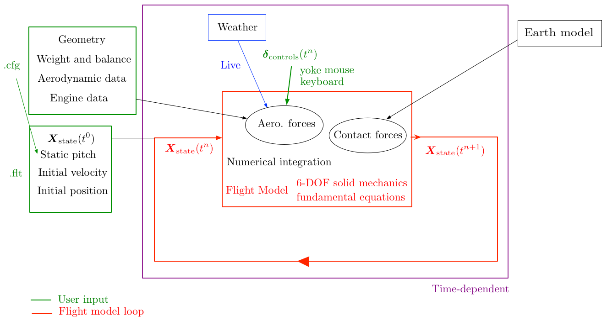
In the following, we will go into the details of each aspect of this equation, notably what this \(H\) function exactly is, and we will explain how the equation is solved numerically to update the aircraft state.
Aircraft description
Wing description
Geometric description
The projection of the wing of the plane on the \(x-z\) plane is called the wing planform. A typical planform is sketched below:
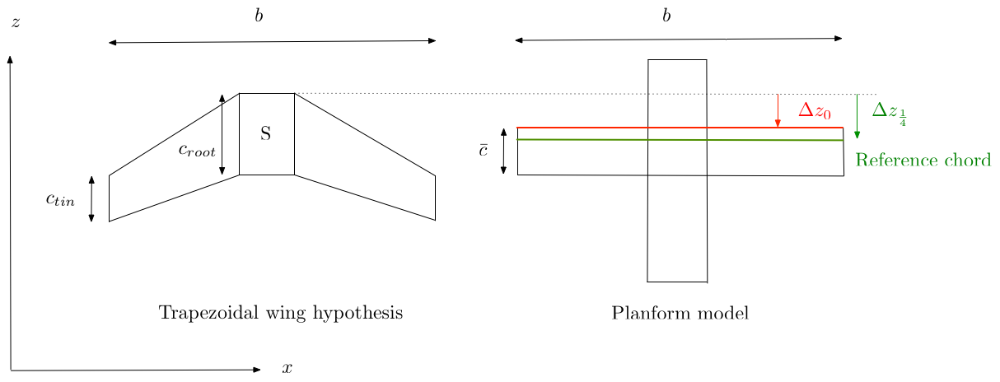
- \(S\) is the wing area, the area of the planform
\[S = \int_{0}^{\frac{b}{2}}{c(x)\mathrm{d}x}\]
- \(b\) is the wing span, the maximum lateral extent of the planform
- \(c_{tip}\) is the chord at the tip
- \(c_{root}\) is the chord at the root
- \(\lambda =\frac{c_{tip}}{c_{root}}\) is the tapper ratio
- \(AR=\frac{b^2}{S}\) is the aspect ratio of the planform
- \(\Lambda_n\) is the sweep angle of any constant-chord fraction i.e the angle formed by \(\boldsymbol{e}_x\) and the line linking all the points located at distance \((1/n)\,c(x)\) from the leading edge. For instance, \(\Lambda_0\) corresponds to the angle between the leading edge and lateral direction \(\boldsymbol{e}_x\).
- \(\Gamma\) is the dihedral angle of the wing
A wing section, or airfoil, is simply a cut through the lifting surface in a plane of constant \(x\).
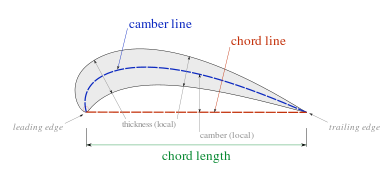
Several quantities are associated with a sectional airfoil: * \(c=c(x)\) is the local section chord size * \(\epsilon = \epsilon(x)\) is the section angular twist with respect to the root section * \(\alpha = \alpha(x)\) is the deviation of the angle of attack for section x with respect to the angle of attack at wing root section, which is THE angle of attack taken as reference for the simulation
From these purely geometric data, we can compute several data of major interest in aerodynamics theory
- \(\bar{c}\) the mean aerodynamic chord (MAC) of the wing:
\[\bar{c} = \frac{2}{S}\int_{0}^{\frac{b}{2}}{c^2(x)\mathrm{d}x}\]
The MAC can be considered a two-dimensional representation of the whole wing. The pressure distribution over the entire wing can be reduced to a single lift force on and a moment around the aerodynamic center of the MAC (that we will define just below). Therefore, not only the length but also the position of MAC is often important. In particular, the position of center of gravity (CG) of an aircraft is usually measured relative to the MAC, as the percentage of the distance from the leading edge of MAC to CG with respect to MAC itself. In the same manner as we have reduced all the chords \(c(x)\) to a single MAC chord \(\bar{c}\), we can reduce all the positions of the points \(z_n(x)\) located at a fraction \(n\) from the leading edge of the local chord \(c(x)\) to a single averaged position \(\bar{z}_n\)
- \(\Delta \bar{z_{n}} = z_{\textrm{wing apex}} - \bar{z_{n}}\) the longitudinal location of this averaged chord-fraction point on the MAC with respect to wing apex is then:
\[ \Delta \bar{z}_{n} = \frac{2}{S}\int_0^{\frac{b}{2}}{\Delta z_n(x)\,c(x)\mathrm{d}x} \]
All these quantities can be analytically computed for a trapezoidal tappered swept wing like the one depicted in Figure . In this specific case, we get:
\[ S = b\, c_{root}\frac{1+\lambda}{2} \]
The sweep angle of any constant chord fraction line can be related to that of the leading edge sweep angle by:
\[ AR\, \textrm{tan}\Lambda_n = AR\, \textrm{tan}\Lambda_0 -4 n \frac{1-\lambda}{1+\lambda} \]
The equivalent planform MAC is:
\[ \bar{c} = \frac{2\left(1+\lambda+\lambda^2\right)}{3\left(1+\lambda\right)} c_{root}\,, \]
The location of any chord-fraction \(n\) point on the MAC relative to the wing apex is:
\[ \Delta \bar{z}_{n} = \bar{c}\left(n+\frac{(1+\lambda)\,(1+2\lambda)}{8\,(1+\lambda+\lambda^2)}\, \textrm{AR} \, \textrm{tan}\Lambda_0\right) = n \bar{c} + \frac{b}{6}\left(\frac{1+2\lambda}{1+\lambda}\right)\textrm{tan}\Lambda_0 \]
For instance, the longitudinal position of the leading edge of the equivalent planform, called reference chord in FSX, in body coordinate system centered at VMO is:
\[ z_{\textrm{ref chord}} = z_{\textrm{wing apex}} - \Delta \bar{z}_{0} = z_{\textrm{wing apex}} - \frac{b}{6}\left(\frac{1+2\lambda}{1+\lambda}\right)\textrm{tan}\Lambda_0 \]
The placing of MAC leading edge (reference chord) to the correct position along the airplane body is important for a correct CG indication in gauges However, it does not affect flight dynamics. This means that the only wing geometrical parameters influencing the simulation are: * \(S\) * \(b\) * \(c_{root}\) * wing_incidence (influence on AoA on lift calculation)
From them the code computes: * \(c_{tip} = \frac{2S}{b} -c_{root}\) * \(\lambda = \frac{c_{tip}}{c_{root}}\) * \(\bar{c} = \frac{2\left(1+\lambda+\lambda^2\right)}{3\left(1+\lambda\right)} c_{root}\,,\) * \(AR = \frac{b^2}{S}\)
The following geometrical parameters can be prescribed but are used only for debug or gauges indications: * wing dihedral * wing_pos_apex_vert, wing_pos_apex_lon * wing_pos_refchord, wing_cg_refchord * wing sweep
Used by Seb * wing_twist * wing_dihedral
Aerodynamic description
wing_oswald is not used ##### Aerodynamic coefficients
\(c_{\ell}\)
The lift, drag and pitching moments adimensional coefficients of the wing are defined as:
- Lift coefficient \(C_L = \frac{L}{QS}\)
- Drag coefficient \(C_D = \frac{D}{QS}\)
- Pitching moment coefficient \(C_m = \frac{M}{QS\bar{c}}\), by convention it is generally computed with respect to quarter-chord point of the airfoil (i.e aerodynamic center)
where \(Q = \frac{1}{2}\rho u_z^2\) is the dynamic pressure and \(L\), \(D\) and \(M\) are respectively the lift force, the drag force and the pitching moment
Pressure center
The pressure center \(P_{pc}(x)\) is the physical point of application of the resulting aerodynamic forces, generally taking into account only the lift force. Its position depends on the way the local pressure forces are located around the airfoil section. It can be evaluated from the pitch moment and the lift. We note \(z_{pc}(x)\) the longitudinal position of \(P_{pc}\) with respect to the longitudinal position of the point \(P\) at which the pitching moment has been evaluated:
\[ \frac{z_{pc}(x)}{c(x)} = -\frac{c_{m,P}(x)}{c_{\ell}}(x) \]
This point moves depending on the angle of attack. When the angle of attack is zero, it is located about 3/4 of the chord from the leading edge, and moves forward as the angle of attack increases, until max 30% the the chord from the leading edge.
Aerodynamic center
The section aerodynamic center \(P_{ac} = P_{ac}(x)\) of an airfoil is the point about which the pitching moment, due to the distribution of aerodynamic forces acting on the airfoil surface, is independent of the angle of attack.
\[ \frac{\mathrm{d} c_{m, P_{ac}} }{\mathrm{d} \alpha}(x) = 0 \]
Thin-airfoil theory tells us that the aerodynamic center is located on the chord line, one quarter of the way from the leading to the trailing edge – the so-called quarter-chord point. The value of the pitching moment about the aerodynamic center can also be determined from thin-airfoil theory, but requires a detailed calculation for each specific shape of camber line. Here, we simply note that, for a given shape of camber line the pitching moment about the aerodynamic center is proportional to the amplitude of the camber, and generally is negative for conventional subsonic (concave down) camber shapes.
We note \(\Delta z_{ac} = z_{P}(x) - z_{ac}\) the longitudinal position of \(P_{ac}\) where \(P\) is the point at which the pitching moment has been evaluated. The moment computed with respect to point \(P_{ac}\), for the section at lateral position \(x\):
\[ \begin{array}{ll} &\displaystyle c^2 \, c_{m, P_{ac}}= \left(z_{ac}- z_{pc} \right) \, c \, c_{\ell} \\ \Rightarrow & \displaystyle c_{m, P_{ac}} = \left(z_{ac}- z_{pc} \right) \, \frac{c_{\ell}}{c} = -z_{pc}\frac{c_{\ell}}{c} + z_{ac}\frac{c_{\ell}}{c} = c_{m,P} + \Delta z_{ac}\frac{c_{\ell}}{c} \end{array} \]
To get the position of the aerodynamic center, we derivate this expression and equal it to zero, admitting that the position of \(P_{ac}\) is nearly fixed (this is true until the angle of attack remains not too near from stall):
\[ \begin{array}{lll} \displaystyle c_{m, P_{ac}} = c_{m,P} + \Delta z_{ac}\frac{c_{\ell}}{c}&& \\ \displaystyle \displaystyle \frac{\partial c_{m, P_{ac}} }{\partial \alpha} = 0 & \Rightarrow & \displaystyle \frac{\partial c_{m, P} }{\partial \alpha} + \frac{c_{\ell}}{c} \underbrace{\frac{\partial z_{ac} }{\partial \alpha}}_{\approx 0} + \frac{z_{ac}}{c} \frac{\partial c_{\ell} }{\partial \alpha}= 0\\ &\displaystyle \Rightarrow & \displaystyle \Delta z_{ac} = c \frac{\partial c_{m,P}}{\partial c_{\ell}} \end{array} \]
So far, we have computed the aerodynamic center for an airfoil section. The total wing aerodynamic center is defined considering the planform model of the wing. Similarly, we get:
\[ \Delta z_{ac} = \bar{c} \frac{\partial c_{m,P}}{\partial c_{\ell}} \]
The longitudinal coordinate of the aerodynamic center is thus:
\[z_{ac} = z_P - \Delta z_{ac}\,.\]
We see that if \(P\) is the aerodynamic center, i.e the point at which the pitch moment doest not vary with lift/AoA, then the derivative is 0 and \(\Delta z_{ac} = 0\).
When \(P\) is located exactly at the aircraft gravity center \(G\), \(\frac{\partial c_{m,G}}{\partial c_{\ell}} = C_{\textrm{static margin}}\) is called static margin and the aerodynamic center can be computed in the body coordinates system \((0, 0, z_G - \bar{c} \,C_{\textrm{static margin}})\)
For a thin airfoil, it can be seen experimentally that the aerodynamic center is located at 1/4 of the chord from the leading edge, and remains nearly fixed in unstalled standard flight configurations.
By default, in FSX: * Roll and yaw moments tables (AoA tables and stability derivatives) are assumed to be computed using VMO as reference point for moment computation. The consequence is that if user only has tables generated using a different reference point, a correction must be applied. Note that no correction is applied in aero forces kinetic moment computation to take into account the fact that the angular moments equation is written with respect to G. Best way to circumvent this inconsistency for now is to set VMO = G * Pitching moments tables, the location of the point used to create the tables can be explicitely set in AIR file under the form of a longitudinal offset with respect to VMO. If no longitudinal offset in set,it is automatically considered that pitch moment tables are defined relative to the wing aerodynamic center. The kinetic moment correction accounting for the fact the \(c_m\) is relative to \(P_{ac}\) and not G is accurately computed. The code automatically evaluates the aerodynamic center of the wing \((0, 0, z_G - \bar{c} \,C_{\textrm{static margin}})\), assuming:
\[ \frac{\partial c_{m,G}}{\partial c_{\ell}} \approx \frac{\partial c_{m,ac}}{\partial c_{\ell}} \]
Neutral point
This is the equivalent of the aerodynamic center but taking into account for the lift induced pitch of the whole plane (especially the tail) instead of only taking into account the wing lift.
Control description
Geometric description
Aircraft mechanical description
6 DOF rigid body description
Gravity center
The empty aircraft gravity center position \(\boldsymbol{x}_G^{empty, r}\) is prescribed by user in the reference datum, in feet, using keyword empty_weight_CG_position = z, x, y
Mass properties
Let us note \(m_{empty}\) the mass of the aircraft when it is empty. Its is prescribed in lbs using keyword empty_weight_CG_position of section WEIGHT_AND_BALANCE in the configuration file.
CG_forward_limit CG_aft_limit
It is possible to specify an arbitrary number of additional payload stations (passengers, luggages) in Microsoft Flight Simulator. Maximum number of stations is prescribed by user in WEIGHT_AND_BALANCE usin keyword max_number_of_stations.
Each payload is defined by: * its name * its weight \(m_{payload,i} g_{sea level}\) * its position \(\boldsymbol{x}_{payload,i}^r\)
station_load.i = weight, z, x, y, name
Position of each payload is given in the reference datum frame, in feet. Note that, if additional payloads are set, Microsoft Flight Simulator will recompute: * the new total mass \(m = m_empty + \sum_{i}{m_{payload,i}}\) * the resulting moment of the gravitional forces exerted on these additional payloads * the new position of the gravity center relative to datum reference * the new matrix of inertia
Aircraft attitude and Euler angles
Aircraft orientation is described in terms of Euler angles as described below:
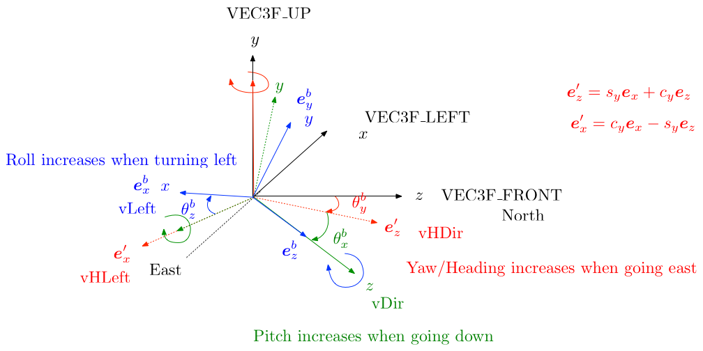
- \(\theta_x\) is the pitch angle
- \(\theta_y\) is the yaw/heading angle
- \(\theta_z\) is the roll/bank angle
We note \(\boldsymbol{\theta} = \left(\theta_x, \, \theta_y, \, \theta_z\right)\) the rotation vector. The 3 rotations corresponding to the 3 Euler angles must be compounded in a given, chosen, arbitrary order to get the global rotation/orientation/attitude of the plane. The is order is yaw - pitch -roll in FSX.
Static longitudinal stability
Matrix of inertia
The matrix of inertia of a solid is symmetric and depends only on the shape and physical nature of the solid object. It is computed relative to a specific point, generally the gravity center \(C_G\):
\[ \boldsymbol{\mathcal{J}}_G = \left( \begin{array}{lll} \displaystyle \int_{B}{\rho^b \left(\left(y-y_{G}\right)^2+\left(z-z_{G}\right)^2\right)}& \displaystyle -\int_{B}{\rho^b \left(x-x_{G}\right)\left(y-y_{G}\right)} & \displaystyle -\int_{B}{\rho^b \left(x-x_{G}\right)\left(z-z_{G}\right)}\\\\ \displaystyle -\int_{B}{\rho^b \left(x-x_{G}\right)\left(y-y_{G}\right)} &\displaystyle \int_{B}{\rho^b \left(\left(x-x_{G}\right)^2+\left(z-z_{G}\right)^2\right)} &\displaystyle -\int_{B}{\rho^b \left(y-y_{G}\right)\left(z-z_{G}\right)}\\\\ \displaystyle -\int_{B}{\rho^b \left(x-x_{G}\right)\left(z-z_{G}\right)} &\displaystyle -\int_{B}{\rho^b \left(y-y_{G}\right)\left(z-z_{G}\right)} &\displaystyle\int_{B}{\rho^b\left(\left(x-x_{G}\right)^2+\left(y-y_{G}\right)^2\right)}\\ \end{array} \right) \] where \(\rho^b\) is the local density of the aircraft body
For an aircraft, plane or helicopter at least, the expression of the matrix of inertia expressed in the stability frame simplifies due to symmetries in the geometry of the plane: \(J_{xz} = 0\) because when taking any cut parallel to plane \((Oxz)\), the profil obtained is symmetric relative to axis (Ox) * \(J_{xy} = 0\) because when taking any cut parallel to plane \((Oxy)\), the profil obtained is symmetric relative to axis (Oy)
Only non-diagonal term \(J_{yz} \neq 0\), which will be very helpful for solving the fondamental 6-DOF rigid body equations described below.
NB: These relations are of course not true anymore if the aircraft is loaded in an assymetric manner… This case is not fully handled in FSX legacy neither Microsoft Flight Simulator at the moment
Referential frames and conventions
Five different referential frames are used. They are displayed in Figure
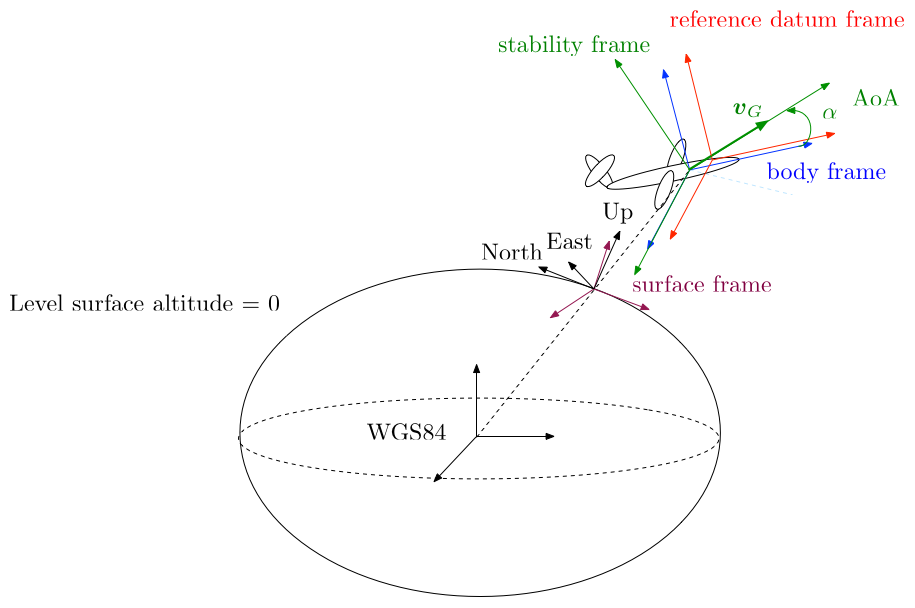
Canonical inertial frame
This frame is located at the center of the earth and does not move in any way. It is considered as a Galileean frame, in which fondamental laws of solid mechanics can be written. It is the only referential we use which does not move in time.
Aircraft body frame
This frame \(\left(O_{FSX}(t), \,\boldsymbol{e}_x^b(t), \,\boldsymbol{e}_y^b(t), \,\boldsymbol{e}_z^b(t)\right)\) is attached to the aircraft body. According to historical FSX conventions, and as stated in FSX/ESP documentation (see below) it is centered “on the centerline chord aft of the leading edge”
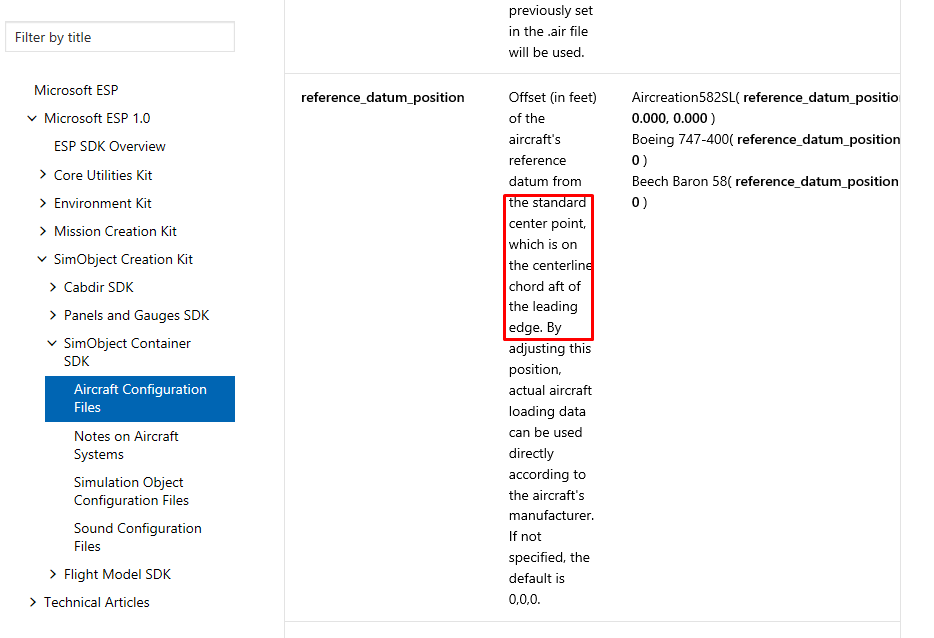
The \((0,0,0)\) point in the model is the visual center when loaded into FSX legacy. The term “centerline chord” is the 1/4 root chord. This is usually the exact same point in the model. By default FS defines the center of lift as the model’s center, which means the center of lift is (by default) defined at the 1/4 root chord position.
Be careful, this is only true if the modeler did -in fact- set the model’s mesh origin to the 1/4 root chord position. If the modeler chose for some reason to set the model’s origin at the tip of the aircraft’s nose, then all bets are off on the model ever being able to be properly configured!!!
Be aware that in Microsoft Flight Simulator, this referential is left-handed * \(z\) is the longitudinal direction pointing toward the nose of the aircraft; rotation of the aircraft around this axis is named roll or bank. \(p\) is the roll velocity rate expressed in the body frame. * \(x\) is the side direction pointing toward the right wing typically on a plane; rotation of the aircraft around this axis is named pitch. \(q\) is the pitch velocity rate expressed in the body frame. * \(y\) is the vertical direction pointing up the aircraft; rotation of the aircraft around this axis is named yaw or heading. \(r\) is the yaw velocity rate expressed in the body frame.
NB: These non-intuitive notations \(p\), \(q\), \(r\) are due to the fact that FSX uses these notations which are normally used in the case where the body frame is right-handed and such that x is longitudinal direction, y side direction and z vertical direction pointing downward.
The body frame is often of interest because the origin and the axes remain fixed relative to the aircraft. This means that the relative orientation of the Earth and body frames describes the aircraft attitude. Also, the direction of the force of thrust is generally fixed in the body frame, though some aircraft can vary this direction, for example by thrust vectoring.
KH_Utils_G.cpp provides routines enabling to pass from quaternion description to PBH (Pitch-Heading-Bank) description: GetPbhFromRotation and GetRotationFromPbh To get the transformation matrix from body coordinates to Earth right-handed coordinates, Euler angles are to be compounded in this order: yaw/pitch/roll.
Let us adopt the following notations:
\[ \begin{array}{lll} \textrm{yaw}&c_y = \textrm{cos}\,\theta_y,& s_y = \textrm{sin}\,\theta_y\\ \textrm{pitch}&c_x = \textrm{cos}\,\theta_x,& s_x = \textrm{sin}\,\theta_x\\ \textrm{roll}&c_z = \textrm{cos}\,\theta_z,& s_z = \textrm{sin}\,\theta_z \end{array} \]
And let us coupound the 3 Euler rotations in the required order yaw/pitch/roll to get the transformation matrix:
\[ \begin{array}{lll} \textrm{yaw} & & \left( \begin{array}{lll} \phantom{-}c_y & 0 & -s_y \\ \phantom{-}0 & 1 & 0\\ s_y & 0 & c_y \end{array} \right) \\ \textrm{pitch} & \left( \begin{array}{lll} 1 & 0 & 0 \\ 0 & \phantom{-}c_x & s_x\\ 0 & -s_x & c_x \end{array} \right) & \left( \begin{array}{lll} \phantom{-}c_y & \phantom{-}0 & -s_y \\ s_y s_z& \phantom{-}c_x & s_x c_y\\ c_x s_y & -s_x & c_x c_y \end{array} \right) \\\\ \textrm{roll} & \left( \begin{array}{lll} \phantom{-}c_z& s_z & 0 \\ -s_z & c_z & 0\\ 0 & 0 & 1 \end{array} \right) & \left( \begin{array}{lll} c_z c_y + s_z s_x s_y & s_z c_x & -c_z s_y + s_z s_x c_y\\ -s_z c_y + c_z s_x s_y & \phantom{-}c_x c_z & s_z s_y +c_z s_x c_y\\ c_x s_y & -s_x & \phantom{-}c_x c_y \end{array} \right) \end{array} \]
In the code, transformation matrix \(\mathcal{R}^{\textrm{body} (z, x, y) \rightarrow \textrm{earth}}\) is given so that vector coordinates in the body frame are given as \((z, x, y)\), which just comes to multiplying the above transformaiton matrix by the permutation matrix like this:
\[ \begin{array}{lll} & \left( \begin{array}{lll} c_z c_y + s_z s_x s_y & -s_z c_y + c_z s_x s_y & c_x s_y \\ s_z c_x & \phantom{-}c_x c_z & -s_x\\ -c_z s_y + s_z s_x c_y & s_z s_y +c_z s_x c_y & \phantom{-}c_x c_y \end{array} \right) & \left. \left( \begin{array}{lll} 0& 1 & 0 \\ 0 & 0 & 1\\ 1 & 0 & 0 \end{array} \right) \right\} \left(z, x, y\right) \rightarrow \left(x, y, z\right) \\\\ \underbrace{ \left( \begin{array}{lll} 0 & 0 & 1 \\ 1 & 0 & 0\\ 0 & 1 & 0 \end{array} \right) }_{ y \leftrightarrow z \textrm{, earth right-handed} (x, y, z) \rightarrow (z, x, y)} & \left( \begin{array}{lll} -c_z s_y + s_z s_x c_y & s_z s_y +c_z s_x c_y & \phantom{-}c_x c_y\\ c_z c_y + s_z s_x s_y & -s_z c_y + c_z s_x s_y & c_x s_y\\ s_z c_x & \phantom{-}c_x c_z & -s_x\\ \end{array} \right) & \left( \begin{array}{lll} \phantom{-}c_x c_y & -c_z s_y + s_z s_x c_y & s_z s_y +c_z s_x c_y \\ c_x s_y & c_z c_y + s_z s_x s_y & -s_z c_y + c_z s_x s_y \\ -s_x & s_z c_x & \phantom{-}c_x c_z \\ \end{array} \right) \end{array} \]
We finally get the expression of this transformation matrix as found in the code:
\[ \mathcal{R}^{\textrm{body} (z, x, y) \rightarrow \textrm{earth}} = \left( \begin{array}{lll} c_x c_y & s_z s_x c_y - c_z s_y & c_z s_x c_y + s_z s_y\\ c_x s_y & s_z s_x s_y + c_z c_y & c_z s_x s_y -s_z c_y \\ - s_x & s_z c_x & c_z c_x \end{array} \right) \]
Surface frame
This frame is noted \(\left(H(t), \boldsymbol{e}_x^{surf}(t), \boldsymbol{e}_{y}^{surf}(t), \boldsymbol{e}_{z}^{surf}(t)\right)\)
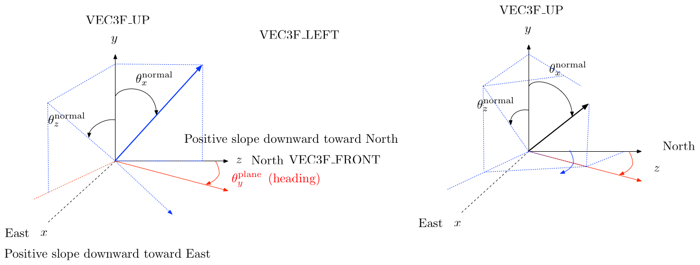
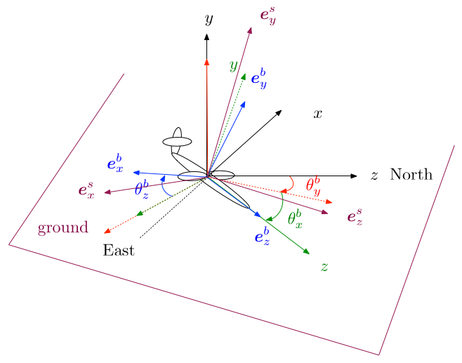
The center of the surface frame is the localization of the current projection \(H(t)\) of the gravity center \(C_G(t)\) of the plane on the geoid model (AMSL) The surface frame \(\left(H, \boldsymbol{e}_{x}^{s}(t), \boldsymbol{e}_{y}^{s}(t), \boldsymbol{e}_{z}^{s}(t)\right)\) is defined as shown on Figure:
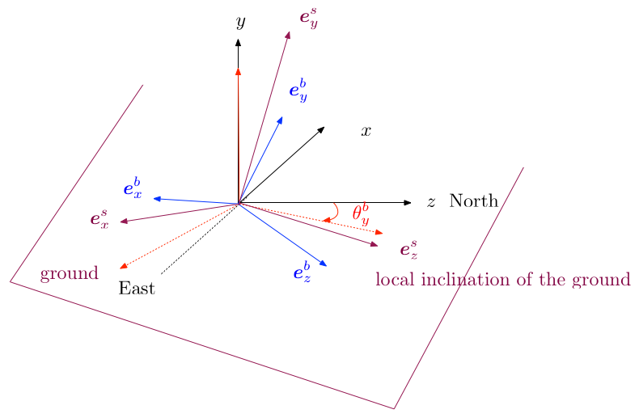
The yaw of this reference frame is equal to the current yaw of the aircraft body frame, the pitch and roll are obtained by analyzing the local surface normal pitch and roll:
\[ \theta_x^{nor} = \textrm{atan}{\left(\frac{n_z}{n_y}\right)}\,, \quad \theta_z^{nor} = \textrm{atan}{\left(\frac{n_x}{n_y}\right)} \]
\[ \begin{array}{ll} \boldsymbol{n} &= \displaystyle \left( \begin{array}{l} \textrm{cos}\left(\frac{\Pi}{2}-\theta_z^{nor}\right)\,\textrm{sin}\left(\theta_x^{nor}\right)\,\textrm{cos}\left(\theta_y^{nor}\right) + \textrm{sin}\left(\frac{\Pi}{2}-\theta_z^{nor}\right)\,\textrm{sin}\left(\theta_y^{nor}\right)\\ \textrm{cos}\left(\frac{\Pi}{2}-\theta_z^{nor}\right)\,\textrm{sin}\left(\theta_x^{nor}\right)\,\textrm{sin}\left(\theta_y^{nor}\right) - \textrm{sin}\left(\frac{\Pi}{2}-\theta_z^{nor}\right)\,\textrm{cos}\left(\theta_y^{nor}\right) \\ \textrm{cos}\left(\frac{\Pi}{2}-\theta_z^{nor}\right)\,\textrm{cos}\left(\theta_x^{nor}\right) \end{array} \right)\\\\ &= \displaystyle \left( \begin{array}{l} \textrm{sin}\left(\theta_z^{nor}\right)\,\textrm{sin}\left(\theta_x^{nor}\right)\,\textrm{cos}\left(\theta_y^{nor}\right) + \textrm{cos}\left(\theta_z^{nor}\right)\,\textrm{sin}\left(\theta_y^{nor}\right)\\ \textrm{sin}\left(\theta_z^{nor}\right)\,\textrm{sin}\left(\theta_x^{nor}\right)\,\textrm{sin}\left(\theta_y^{nor}\right) - \textrm{cos}\left(\theta_z^{nor}\right)\,\textrm{cos}\left(\theta_y^{nor}\right) \\ \textrm{sin}\left(\theta_z^{nor}\right)\,\textrm{cos}\left(\theta_x^{nor}\right) \end{array} \right)\\\\ &= \displaystyle \left( \begin{array}{l} \textrm{sin}\left(\theta_z^{nor}\right)\,\textrm{sin}\left(\theta_x^{nor}\right) \\ - \textrm{cos}\left(\theta_z^{nor}\right) \\ \textrm{sin}\left(\theta_z^{nor}\right)\,\textrm{cos}\left(\theta_x^{nor}\right) \end{array} \right)\\\\ & \displaystyle = \left( \begin{array}{l} \textrm{cos}\left(\theta_z^{s}\right)\,\textrm{sin}\left(\theta_x^{s}\right)\,\textrm{cos}\left(\theta_y^{b}\right) + \textrm{sin}\left(\theta_z^{s}\right)\,\textrm{sin}\left(\theta_y^{b}\right)\\ \textrm{cos}\left(\theta_z^{s}\right)\,\textrm{sin}\left(\theta_x^{s}\right)\,\textrm{sin}\left(\theta_y^{b}\right) - \textrm{sin}\left(\theta_z^{s}\right)\,\textrm{cos}\left(\theta_y^{b}\right) \\ \textrm{cos}\left(\theta_z^{s}\right)\,\textrm{cos}\left(\theta_x^{s}\right) \end{array} \right) \end{array} \] We compute a new normal that has the same pitch and roll as the “real” normal but which has the same yaw as the aircraft body.
Now we just have to find \(\theta^s_x\) and \(\theta^s_z\) such that:
\[ \left\{ \begin{array}{l} \displaystyle s_z^n s_x^n = c_z^s s_x^s \,\textrm{cos}\theta_y^b + s_z^s\textrm{sin}\,\theta_y^b\\\\ \displaystyle -c_z^n = c_z^s s_x^s \textrm{sin}\,\theta_y^b - s_z^s\textrm{cos}\,\theta_y^b\\\\ \displaystyle s_z^n c_x^n = c_z^s c_x^s \end{array} \right. \]
\[ \left\{ \begin{array}{ll} \displaystyle (1)\times\textrm{cos}\theta_y^b + (2) \times \textrm{sin}\,\theta_y^b \Rightarrow & \displaystyle s_z^n s_x^n \textrm{cos}\theta_y^b -c_z^n\textrm{sin}\,\theta_y^b = c_z^s s_x^s \\\\ \displaystyle (1)\times\textrm{sin}\theta_y^b - (2) \times \textrm{cos}\,\theta_y^b \Rightarrow & \displaystyle s_z^n s_x^n \textrm{sin}\,\theta_y^b + c_z^n \textrm{cos}\,\theta_y^b = s_z^s\\ \end{array} \right. \]
Then by combining linearly the different lines:
\[ \left\{ \begin{array}{ll} \displaystyle (1)\times\frac{1}{s_z^n c_x^n = c_z^s c_x^s} \Rightarrow & \displaystyle t_x^n \textrm{cos}\theta_y^b -\frac{c_z^n}{s_z^n c_x^n}\textrm{sin}\,\theta_y^b = t_x^s \\\\ (2)\displaystyle \times\frac{1}{c_z^s = \frac{s_z^nc_x^n}{c_x^s}} = \frac{c_x^s}{s_z^nc_x^n}\Rightarrow & \displaystyle c_x^s t_x^n \textrm{sin}\,\theta_y^b + \frac{c_z^n}{c_z^s} \textrm{cos}\,\theta_y^b = t_z^s\\ \end{array} \right. \]
which provides values for \(\theta^s_x\) and \(\theta^s_z\). (TO BE IMPROVED: I CANNOT EXPLAIN THE FORMULA USED IN THE CODE, sim1_World.cpp, SurfaceInformation::CalculateBodyToSurfaceMatrix. FURTHER INVESTIGATION NEEDED)
Finally, the transformation matrix from body frame coordinates to surface frame coordinates simply writes like \(\mathcal{R}^{\textrm{body} (z, x, y) \rightarrow \textrm{earth} (z, x, y)}\), using relatives angles and the fact that body and surface frames have the same yaw \(\theta_y^s = \theta_y^b\):
\[\mathcal{R}^{\textrm{body} (z, x, y) \rightarrow \textrm{surf} (z, x, y)} = \left( \begin{array}{lll} \phantom{-}\textrm{cos}\left(\theta_x^b - \theta_x^s\right) & \textrm{sin}\left(\theta_z^b - \theta_z^s\right) \textrm{sin}\left(\theta_x^b - \theta_x^s\right) & \phantom{-}\textrm{cos}\left(\theta_z^b - \theta_z^s\right) \textrm{sin}\left(\theta_x^b - \theta_x^s\right) \\ \phantom{-}0 & \textrm{cos}\left(\theta_z^b - \theta_z^s\right) & -\textrm{sin}\left(\theta_z^b - \theta_z^s\right) \\ - \textrm{sin}\left(\theta_x^b - \theta_x^s\right)& \textrm{sin}\left(\theta_z^b - \theta_z^s\right) \textrm{cos}\left(\theta_x^b - \theta_x^s\right) & \phantom{-} \textrm{cos}\left(\theta_z^b - \theta_z^s\right) \textrm{cos}\left(\theta_x^b - \theta_x^s\right) \end{array} \right) \]
Stability (lift and drag) frame
This frame is noted \(\left(O_{FSX}(t), \,\boldsymbol{e}_x^{stab}(t), \,\boldsymbol{e}_y^{stab}(t), \,\boldsymbol{e}_z^{stab}(t)\right)\)
The current angle of attack (AoA) \(\alpha(t)\) of the aircraft is the angle formed between the current longitudinal velocity direction of the aircraft and the current longitudinal direction \(z\) of the body referential:
\[ \textrm{tan}\left(\alpha(t)\right)= \frac{v_y^b}{v_z^b}\,, \quad \textrm{sometimes noted } = \frac{w}{u} \]
The current side slip angle \(\beta(t)\) of the aircraft is the angle formed between the current side velocity direction of the aircraft and the current longitudinal direction \(z\) of the body referential:
\[ \textrm{tan}\left(\beta(t)\right) = \frac{v_x^b}{v_z^b}\,, \quad \textrm{sometimes noted } = \frac{v}{u} \]
The stability frame is used for the computation of lift and drag forces. It is just a rotation of the body frame around body frame axis \(\boldsymbol{e}_x^b\) (pitch) of angle \(\alpha = \alpha(t)\) corresponding to the current Angle of Attack (AoA) of the aircraft.
\[ \left\{ \begin{array}{ll} \displaystyle \boldsymbol{e}_x^{\textrm{stab}}(t) &\displaystyle = \boldsymbol{e}_x^b(t)\\ \displaystyle \boldsymbol{e}_y^{\textrm{stab}}(t)& \displaystyle =-\sin{\left(\alpha(t)\right)} \,\boldsymbol{e}_z^b(t) + \cos{\left(\alpha(t)\right)} \,\boldsymbol{e}_y^b(t)\\ \displaystyle \boldsymbol{e}_z^{\textrm{stab}}(t) &\displaystyle = \phantom{-}\cos{\left(\alpha(t)\right)}\, \boldsymbol{e}_z^b(t) + \sin{\left(\alpha(t)\right)} \,\boldsymbol{e}_y^b(t) \end{array} \right. \]
Reference datum frame
This referential \(\left(R_{\textrm{datum}}(t), \,\boldsymbol{e}_x^b(t), \,\boldsymbol{e}_y^b(t), \,\boldsymbol{e}_z^b(t)\right)\) is simply a translation of the body frame from \(O_{FSX}\) to an arbitrary reference datum point \(R\) provided by the aircraft manufacturer or by user for practical purpose. \(R\) coordinates are generally provided in the body frame, i.e with respect to visual model (mesh) center \(O_{FSX}\). The reference datum point \(R\) is defined by user using reference_datum_position in WEIGHT_AND_BALANCE section. User provides the 3 coordinates \((z, x, y)\) of this point relative to visual model (mesh) center \(O_{FSX}\) point ( long: 1/4 MAC, lat: 0, vert: waterline). Coordinates are provided in feet.
It’s important to understand that the reference datum position is a value used to define just that. The keyword in any description of “reference datum position” is this: arbitrary. In the real world, all aircraft have a reference datum position. It is typically defined in front of the aircraft’s nose at some arbitrary point by the designer. If you leave all values at (0,0,0) in aircraft configuration file, then by default your center of lift, your visual model center and your reference datum position are all in the exact same location. However, if you have the correct reference datum position for the real aircraft and know the offsets of such things as fuel tanks from that reference datum position… then you want to use the reference datum position value in the configuration file to offset it from the (0,0,0) default model center and move it to the real world location. By doing that, you can now use real world measurement information that’s based on the real world reference datum to position pretty much anything.
The only critical thing to keep in mind is that in FS, aside from the model’s center (0,0,0) which is defined in the model (mesh) file itself, every other positional setting in the aircraft.cfg file is relative to the defined reference datum position.“Since most modelers don’t have access to the”real world engineering data" for the aircraft they are building, they simply set the “reference datum position” to be coincident to the model’s center origin, then use the “by guess and by God” method to set all the other positional entries… :( In short, the “reference datum position” is completely optional and arbitrary, and even in the absence of accurate hard engineering data from which to work, it may be set to whatever is most convenient for the modeler!
Fundamental equations
Fundamental equations in inertial frame
The Euler equations for solid dynamics are only valid in an inertial frame and read:
\[ \left\{ \begin{array}{lll} \displaystyle m \frac{\mathrm{d}\boldsymbol{v}_G}{\mathrm{d}t} &= ~\sum{\boldsymbol{F}_{ext}} & \displaystyle= \boldsymbol{F}_{\textrm{aero}} + \boldsymbol{F}_{\textrm{engine}} + \boldsymbol{F}_{\textrm{ground reaction}} + \boldsymbol{F}_{\textrm{gravity}} \\\\ \displaystyle \frac{\mathrm{d}\left(\boldsymbol{\mathcal{J}}_G \boldsymbol{\omega}\right)}{\mathrm{d}t} & \displaystyle = ~\boldsymbol{\mathcal{M}}_G\left(\sum{\boldsymbol{F}_{ext}}\right) &= \boldsymbol{\mathcal{M}}_G\left( \boldsymbol{F}_{\textrm{aero}}\right) + \boldsymbol{\mathcal{M}}_G\left(\boldsymbol{F}_{\textrm{engine}}\right) + \boldsymbol{\mathcal{M}}_G\left(\boldsymbol{F}_{\textrm{ground reaction}}\right)\,, \\\\ \displaystyle \textrm{with } & \displaystyle \boldsymbol{\mathcal{M}}_G\left(\boldsymbol{F}\right) & \displaystyle = \int_{B}{ \bigl[\left(\boldsymbol{s}-\boldsymbol{x}_G\right)\wedge \boldsymbol{F} \bigr] } \end{array} \right. \] and we have used the fact that the kinetic moment of the gravity forces is zero because these forces are applied at gravity center \(G\) of the object.
Rewriting in the aircraft body frame
Why?
Things are much more complex in three dimensions than in two dimensions. Indeed, the number of parameters needed to describe the dynamics of a rigid body now equals six, hence the name \(6\)-DOF problem (\(6\)-Degrees-of-Freedom) used for this class of problems. This means that, contrary to the two-dimensional case, System~() must be fully utilized to compute the movement. Moreover, the directions of \(\boldsymbol{\theta}\) and \(\boldsymbol{\omega}\) are not constant in time anymore, and none of the coefficients of the matrix of inertia remains constant in time when written in the inertial frame. This means that:
\[ \frac{\mathrm{d}\left(\boldsymbol{\mathcal{J}}_G\boldsymbol{\omega}\right)}{\mathrm{d}t} ~\neq~ \boldsymbol{\mathcal{J}}_G\frac{\mathrm{d}\boldsymbol{\omega}}{\mathrm{d}t}\,, \] as \(\boldsymbol{\mathcal{J}}_G\), written in the canonical basis, is not constant in time anymore.
To solve these difficulties, the idea is to rewrite these fundamental relations in aircraft body frame. In this frame, the matrix of inertia is constant in time and, as seen above, it is also simplified as \(J_{xz} = J_{xy} =0\):
In the sequel, we note \(\boldsymbol{\mathcal{R}} = \boldsymbol{\mathcal{R}}(t)\) the matrix enabling to pass from the description in basis \((\boldsymbol{e}^b_{x},\, \boldsymbol{e}^b_{y},\, \boldsymbol{e}^b_{z})\) to the description in fixed canonical basis \((\boldsymbol{e}_{x},\, \boldsymbol{e}_{y},\, \boldsymbol{e}_{z})\):
\[ \begin{array}{ll} \boldsymbol{e}_{x}^b(t) &= r_{1x}(t)\boldsymbol{e}_{x}+ r_{1y}(t)\boldsymbol{e}_{y}+r_{1z}(t)\boldsymbol{e}_{z}\\ \boldsymbol{e}_{y}^b(t) &= r_{2x}(t)\boldsymbol{e}_{x}+ r_{2y}(t)\boldsymbol{e}_{y}+r_{2z}(t)\boldsymbol{e}_{z}\\ \boldsymbol{e}_{z}^b(t) &= r_{3x}(t)\boldsymbol{e}_{x}+ r_{3y}(t)\boldsymbol{e}_{y}+r_{3z}(t)\boldsymbol{e}_{z} \end{array} \]
\[ \boldsymbol{\mathcal{R}} = \boldsymbol{\mathcal{R}}(t) = \left( \begin{array}{lll} r_{1x}(t)&r_{2x}(t)&r_{3x}(t)\\ r_{1y}(t)&r_{2y}(t)&r_{3y}(t)\\ r_{1z}(t)&r_{2z}(t)&r_{3z}(t) \end{array} \right) \]
\[ \left( \begin{array}{l} \boldsymbol{e}_{x}^b(t)\\ \boldsymbol{e}_{y}^b(t)\\ \boldsymbol{e}_{z}^b(t) \end{array} \right) = \boldsymbol{\mathcal{R}}(t) * \left( \begin{array}{l} \boldsymbol{e}_{x}\\ \boldsymbol{e}_{y}\\ \boldsymbol{e}_{z} \end{array} \right) \]
As the two basis are orthonormal, rotation matrix \(\boldsymbol{\mathcal{R}}(t)\) is always an unitary matrix, i.e \(\boldsymbol{\mathcal{R}}(t)\boldsymbol{\mathcal{R}}(t)^{T} = \boldsymbol{\mathcal{I}}_3, \, \, \forall\, \, t\), where \(\mathcal{I}_3\) is the identity matrix.
Derivation of vectors written in the body frame
An arbitrary vector \(\boldsymbol{v}^{b}(t)\) described in aircraft body frame \((\boldsymbol{e}_{x}^b(t),\,\boldsymbol{e}_{y}^b(t),\, \boldsymbol{e}_{z}^b(t))\) has a description \(\boldsymbol{v}(t)\) in the fixed inertial frame. The link between these two representations is given by relation:
\[ \boldsymbol{v}(t) ~=~ \boldsymbol{\mathcal{R}}(t)\,\boldsymbol{v}^{b}(t)\,. \]
As transformation \(\boldsymbol{\mathcal{R}}(t)\) itself is time dependent, in general:
\[ \frac{\mathrm{d}\boldsymbol{v}(t)}{\mathrm{d}t} \ne \boldsymbol{\mathcal{R}}(t)\frac{\mathrm{d}\boldsymbol{v}^{b}(t)}{\mathrm{d}t}\,. \]
The movement of the aircraft body frame must be taken into account while derivating:
\[ \displaystyle \frac{\mathrm{d}\boldsymbol{v}(t)}{\mathrm{d}t} ~=~ \displaystyle \frac{\mathrm{d}\boldsymbol{\mathcal{R}}(t)}{\mathrm{d}t}\boldsymbol{v}^{b}(t)+\boldsymbol{\mathcal{R}}(t)\frac{\mathrm{d}\boldsymbol{v}^{b}(t)}{\mathrm{d}t} ~=~ \frac{\mathrm{d}\boldsymbol{\mathcal{R}}(t)}{\mathrm{d}t}\boldsymbol{\mathcal{R}}^{T}\boldsymbol{v}(t)+\boldsymbol{\mathcal{R}}(t)\frac{\mathrm{d}\boldsymbol{v}^{b}(t)}{\mathrm{d}t}~=~ \displaystyle \boldsymbol{\omega(t)}\wedge {\boldsymbol{v}(t)} + \boldsymbol{\mathcal{R}}(t)\frac{\mathrm{d}\boldsymbol{v}^{b}(t)}{\mathrm{d}t}\,. \]
Indeed, by derivating Relation \(\boldsymbol{\mathcal{R}}^T(t)\boldsymbol{\mathcal{R}}(t)~=~\boldsymbol{\mathcal{I}}_3\), we get:
\[ \begin{array}{ll} &\displaystyle \frac{\mathrm{d} \boldsymbol{\mathcal{R}}(t)}{\mathrm{d}t} \boldsymbol{\mathcal{R}}^{T}(t)~+~\boldsymbol{\mathcal{R}}(t)\frac{\mathrm{d} \boldsymbol{\mathcal{R}}^T(t)}{\mathrm{d} t}~=~ 0 \\\\ \displaystyle \Rightarrow & \displaystyle\frac{ \mathrm{d} \boldsymbol{\mathcal{R}}}{\mathrm{d} t}(t)\boldsymbol{\mathcal{R}}^{T}(t) ~=~ -\left(\frac{\mathrm{d}\boldsymbol{\mathcal{R}}{\mathrm{d}t}(t)\boldsymbol{\mathcal{R}}}(t)^T\right)^T \textrm{ ( i.e } \frac{\mathrm{d}\boldsymbol{\mathcal{R}}}{\mathrm{d}t}(t)\boldsymbol{\mathcal{R}}(t)^T \textrm{ is skew-symmetric) }\\\\ \displaystyle \Rightarrow & \displaystyle \exists\,\, \boldsymbol{\omega} ~=~ \boldsymbol{\omega}(t) \in\, \mathbb{R}^3, \,\, \frac{\mathrm{d}\boldsymbol{\mathcal{R}}}{\mathrm{d}t}(t)\boldsymbol{\mathcal{R}}^{T}(t) ~=~ \displaystyle \left( \begin{array}{lll} \phantom{-}0 & - \omega^b_z(t) & \phantom{-}\omega^b_y(t)\\ \phantom{-}\omega^b_z(t) & \phantom{-}0 & - \omega^b_x(t) \\ - \omega^b_y(t) & \phantom{-}\omega^b_x(t) & \phantom{-} 0 \end{array} \right) ~=~ \boldsymbol{\omega}(t) \wedge {\cdot}\,, \end{array} \]
with:
\[ \boldsymbol{\omega}^b(t) = \left(\omega_x^b(t),\, \omega^b_y(t),\, \omega^b_z(t)\right) = \left(q,\, r, \,p\right)\,, \]
\(p\) is the roll (bank), \(q\) the pitch and \(r\) the yaw (heading), all these quantities being expressed in the body frame. The first term \(\boldsymbol{\omega}(t)^b \wedge \cdot\) accounts for the movement of the body frame (its rotation) as compared to the inertial frame. \(\boldsymbol{\omega}(t)\) is the instantaneous angular speed of the body frame as compared to the inertial frame, written in the canonical, fixed basis \((\boldsymbol{e}_{x}, \boldsymbol{e}_{y}, \boldsymbol{e}_{z})\). We note \(\boldsymbol{\omega}^b\) this same angular speed written in moving basis \((\boldsymbol{e}^b_{x}(t), \,\boldsymbol{e}^b_{y}(t),\, \boldsymbol{e}^b_{z}(t))\) attached to the body. We have \(\boldsymbol{\omega}(t)= \boldsymbol{\mathcal{R}}(t)\boldsymbol{\omega}^b(t)\). Then, using the invariance property of the cross-product, we have, for any arbitrary vector \(\boldsymbol{v}\):
\[ \displaystyle \frac{\mathrm{d}\boldsymbol{v}}{\mathrm{d}t}(t) = \left(\boldsymbol{\mathcal{R}}(t)\boldsymbol{\omega}^b(t)\right)\wedge \boldsymbol{v} + \boldsymbol{\mathcal{R}}(t)\frac{\mathrm{d}\boldsymbol{v}^{b}(t)}{\mathrm{d}t} = \boldsymbol{\mathcal{R}}(t)\left(\boldsymbol{\omega}^b(t)\wedge {\boldsymbol{v}^b(t)} + \frac{\mathrm{d}\boldsymbol{v}^{b}(t)}{\mathrm{d}t}\right)\,. \]
Final formulation as used in Microsoft Flight Simulator
Momentum conservation equation
Using Formula~( to rewrite \(\frac{\mathrm{d}\left(\boldsymbol{\mathcal{J}}_G \boldsymbol{\omega}\right)}{\mathrm{d}t}\) in System~(), we get:
\[ \begin{array}{lll} &\displaystyle \frac{\mathrm{d}\left(\mathcal{J}_G\boldsymbol{\omega}\right)}{\mathrm{d}t} ~=~ \boldsymbol{\mathcal{M}}_{G}\left(\sum{\boldsymbol{F}_{ext}}\right) ~\Rightarrow ~ \boldsymbol{\mathcal{R}}(t)\left( {\boldsymbol{\omega}^b}\wedge {\mathcal{J}_G^b\boldsymbol{\omega}^b} ~+~ \frac{\mathrm{d}\left(\mathcal{J}_G^b\boldsymbol{\omega}^b\right) }{\mathrm{d}t}\right) \displaystyle ~=~ \boldsymbol{\mathcal{R}}(t) \boldsymbol{\mathcal{M}}^b_{G}\left(\sum{\boldsymbol{F}_{ext}}^b\right) \\\\ \Rightarrow &\displaystyle {\boldsymbol{\omega}^b}\wedge {\mathcal{J}_G^b\boldsymbol{\omega}^b} ~+~ \frac{\mathrm{d}\left(\mathcal{J}_G^b \boldsymbol{\omega}^b\right) }{\mathrm{d}t} ~=~ \boldsymbol{\mathcal{M}}^b_{G}\left(\sum{\boldsymbol{F}_{ext}}^b\right) ~ \Rightarrow ~ {\boldsymbol{\omega}^b} \wedge {\mathcal{J}_G^b\boldsymbol{\omega}^b} ~+~ \mathcal{J}_G^b\frac{\mathrm{d} \boldsymbol{\omega}^b }{\mathrm{d}t} ~=~ \boldsymbol{\mathcal{M}}^b_{G}\left(\sum{\boldsymbol{F}_{ext}}^b\right)\,, \end{array} \]
and \(\mathcal{J}_G^b\) written in the body referential frame associated with the plane is invariant in time and has helpfully some terms which are zero. Term \({\boldsymbol{\omega}^b}\wedge {\boldsymbol{\mathcal{J}}_G^b\boldsymbol{\omega}^b}\) can be developped as:
\[ \left( \begin{array}{lll} \phantom{-}0 & - \omega^b_z & \phantom{-}\omega^b_y\\ \phantom{-}\omega^b_z & \phantom{-}0 & - \omega^b_x \\ - \omega^b_y & \phantom{-}\omega^b_x & \phantom{-} 0 \end{array} \right) \left( \begin{array}{lll} J^b_{xx} & 0 & 0\\ 0 & \phantom{-}J^b_{yy} & -J^b_{yz}\\ 0 & -J^b_{yz} & \phantom{-}J^b_{zz} \end{array} \right) \left( \begin{array}{l} \omega^b_x\\ \omega^b_y\\ \omega^b_z \end{array} \right) \\ = \left( \begin{array}{lll} \phantom{-}0 & - p & \phantom{-}r\\ \phantom{-}p & \phantom{-}0 & - q \\ - r & \phantom{-}q & \phantom{-} 0 \end{array} \right) \left( \begin{array}{lll} J^b_{xx} & 0 & 0\\ 0 & \phantom{-}J^b_{yy} & -J^b_{yz}\\ 0 & - J^b_{yz} & \phantom{-}J^b_{zz} \end{array} \right) \left( \begin{array}{l} q\\ r\\ p \end{array} \right) \\ = \left( \begin{array}{lll} 0 & -pJ^b_{yy}-rJ^b_{yz} & pJ^b_{yz} + rJ^b_{zz}\\ pJ^b_{xx} & qJ^b_{yz}& -qJ^b_{zz}\\ -r J^b_{xx} &qJ^b_{yy} & -qJ^b_{yz} \end{array} \right) \left( \begin{array}{l} q\\ r\\ p \end{array} \right) = \left( \begin{array}{l} r \, p\,\left( J^b_{zz} - J^b_{yy}\right)+ J_{yz}\left(p^2-r^2\right)\\ p\,q\,\left(J^b_{xx}-J^b_{zz}\right)+q\,r\,J_{yz}\\ q \, r\,\left( J^b_{yy} - J^b_{xx}\right)- q\,p\,J_{yz}\\ \end{array} \right)\,, \]
which finally leads to the following system of equations for the dynamics of rigid bodies:
\[ \begin{array}{ll} &\displaystyle \left( \begin{array}{lll} J^b_{xx} & 0 & 0\\ 0 & J^b_{yy} &-J^b_{yz}\\ 0 & -J^b_{yz} & J^b_{zz} \end{array} \right) \left( \begin{array}{l} \displaystyle \dot{q}\\ \displaystyle \dot{r}\\ \displaystyle \dot{p} \end{array} \right) + \left( \begin{array}{l} r \, p\,\left( J^b_{zz} - J^b_{yy}\right)+ J_{yz}\left(p^2-r^2\right)\\ p\,q\,\left(J^b_{xx}-J^b_{zz}\right)+q\,r\,J_{yz}\\ q \, r\,\left( J^b_{yy} - J^b_{xx}\right)- q\,p\,J_{yz}\\ \end{array} \right) = \boldsymbol{\mathcal{M}}^b_{G}\left(\sum{\boldsymbol{F}_{ext}}^b\right) \\\\ \displaystyle \Leftrightarrow & \left( \begin{array}{l} \displaystyle J^b_{xx}\dot{q} + r \, p\,\left( J^b_{zz} - J^b_{yy}\right)+\left(p^2-r^2\right)\,J_{yz}\\ \displaystyle J^b_{yy}\dot{r}-J^b_{yz}\dot{p} + p\,q\,\left(J^b_{xx}-J^b_{zz}\right)+q\,r\,J_{yz} \\ -J^b_{yz}\dot{r} + J^b_{zz} \dot{p} + q \, r\,\left( J^b_{yy} - J^b_{xx}\right)- q\,p\,J_{yz} \end{array} \right) = \left( \begin{array}{l} \displaystyle M^b_{G,x}\\ \displaystyle M^b_{G,y}\\ \displaystyle M^b_{G,z} \end{array} \right) = \left( \begin{array}{l} \displaystyle M\\ \displaystyle N\\ \displaystyle L \end{array} \right) \end{array} \]
Thanks to the simple forme of the matrix of inertia of the aircraft written in the body frame, the pitch momentum equation is decorrelated from the others. This is one of the bonuses we get from having struggled to express these equations in the body frame. We directly get, \(J_{yz} \leftarrow -J_{yz}\) (because the integral is negative in left handed coordinates?):
\[ \displaystyle \Leftrightarrow \left\{ \begin{array}{ll} \displaystyle \dot{q}&=\displaystyle \frac{ r \, p\,\left( J^b_{yy} - J^b_{zz}\right)+\left(p^2-r^2\right)\,J_{yz} + M}{J^b_{xx}}\\\\ \displaystyle \dot{r} &=\displaystyle \frac{ \left(q\,r - \dot{p}\right)\,J_{yz} + p\,q\,\left(J^b_{zz}-J^b_{xx}\right) + N}{J^b_{yy}}\\\\ \displaystyle \dot{p}&=\displaystyle \frac{ - \left(q\,p+\dot{r}\right)\,J_{yz} + q \, r\,\left( J^b_{xx} - J^b_{yy}\right)+L}{J^b_{zz}} \end{array} \right.\,, \]
with \(\boldsymbol{\mathcal{M}}^b_{G}\left(\sum{\boldsymbol{F}_{ext}}^b\right)\) given by:
\[ \displaystyle \boldsymbol{\mathcal{M}}^b_{G}\left(\sum{\boldsymbol{F}_{ext}}^b\right) = \boldsymbol{\mathcal{R}}(t)^T\boldsymbol{\mathcal{M}}_{G}\left(\sum{\boldsymbol{F}_{ext}}\right) = = \boldsymbol{\mathcal{R}}(t)^T\left(\boldsymbol{\mathcal{M}}_{G}\left(\boldsymbol{f}_{\textrm{aero}}\right) + \boldsymbol{\mathcal{M}}_{G}\left(\boldsymbol{f}_{\textrm{engine}}\right) + \boldsymbol{\mathcal{M}}_{G}\left(\boldsymbol{f}_{\textrm{ground reaction}}\right)\right)\,. \]
Quantity of movement conservation equation
In Microsoft Flight Simulator, for practical reasons, as we have already computed all forces in the aircraft/body referential, we also solve the linear acceleration equation in the body referential frame:
\[ \displaystyle m \frac{\mathrm{d}^2\boldsymbol{x}_G^b}{\mathrm{d}t^2} + {\boldsymbol{\omega}^b}\wedge {\boldsymbol{v}_G^b} = \boldsymbol{F}^b_{\textrm{aero}} + \boldsymbol{F}^b_{\textrm{engine}} + \boldsymbol{F}^b_{\textrm{ground reaction}} + \boldsymbol{F}^b_{\textrm{gravity}}\,, \]
with \(\boldsymbol{\omega}^b = \left(q, \, r, \, p\right)\) and \(\boldsymbol{v}^b_G = \left(v^b_{x, G}, \, v^b_{y, G}, \, v^b_{z, G}\right)\), this leads to:
\[ \displaystyle \Leftrightarrow \left\{ \begin{array}{ll} \displaystyle m \,\,\left(\dot{v}_{x, G}^b + r\,{v^b_{z, G}}-p\,{v^b_{y, G}}\right)& \displaystyle = X + {F}^b_{x, \textrm{gravity}}\\\\ \displaystyle m\, \,\left(\dot{v}_{y, G}^b+ p\,{v^b_{x, G}}-q\,{v^b_{z, G}} \right)& \displaystyle = Y + {F}^b_{y, \textrm{gravity}}\\\\ \displaystyle m \,\,\left(\dot{v}_{z, G}^b + q\,{v^b_{y, G}}-r\,{v^b_{x, G}} \right)& \displaystyle = Z + {F}^b_{z, \textrm{gravity}} \displaystyle \end{array} \right. \]
It is important to note that the point at which the fundamentla equations are written is \(G\), which is different from the center \(O_{FSX}\) of the body aircraft frame which serves as a reference to define coordinates.
As the pitching moment coefficient is given relative to the wing aerodynamic center, we have to be careful to transform the aero forces moment to take into account the fact that we must at end express all moments relative to \(G\) for consistency
\[ \boldsymbol{M}_{O}(\boldsymbol{F})= \boldsymbol{OM} \wedge \boldsymbol{F} = \boldsymbol{OG} \wedge \boldsymbol{F} + \boldsymbol{GM} \wedge \boldsymbol{F} = \boldsymbol{OG} \wedge \boldsymbol{F} + \boldsymbol{M}_{G}(\boldsymbol{F}) \]
To get \(\boldsymbol{M}_{G}(\boldsymbol{F}_{aero})\), we just have to correct the moment \(\boldsymbol{M}_{O}(\boldsymbol{F}_{aero})\) we computed with aerodynamic coefficients with this term \(-\boldsymbol{OG} \wedge \boldsymbol{F}_{aero}\) and \(\boldsymbol{OG}\) is given by GetCgOfsFromRef in the code.
This is done in the code in each moment function (PitchMoment, RollMoment and YawMoment) in forces.cpp. For roll moment, this correction is not applied as it is assumed that \(G\) and \(O\) are located on the centerline \(x_O=x_G\) and \(y_O=y_G\).
Linear perturbations theory
Numerical integration at each time step
State variables
Primary variables
- Body center position: \(\boldsymbol{x}_G = \left(x^n_G,\, y^n_G, \,z^n_G\right)\) can be transformed in LLA
- Body center velocity: \(\boldsymbol{v}_G = \left(v_{x,G}^n,\, v_{y,G}^n, \,v_{z,G}^n\right)\)
- Body orientation (rotation) \(\boldsymbol{\theta} = \left(\theta^n_x, \,\theta^n_y, \,\theta^n_z\right)\) m_pBodyWorldTransform
- Body rotation velocity \(\boldsymbol{\theta} = \left(q^n = \omega_x^n, \,r^n = \omega_y^n, \,p^n = \omega_z^n\right)\)
Environment variables
Mostly from altitude and atmosphere model * Air density \(\rho\) * Speed of sound \(c\) speed_of_sound * Ambiant wind
Secondary variables
Relative air speed in body axis f_uvel_body_axis f_vvel_body_axis f_wvel_body_axis
Total relative speed \(U\)
Mach number \(M_a = \frac{U}{c}\) f_mach
Dynamic pressure \(Q = \frac{1}{2} \rho U^2\) f_dyn_pres
Angle of attack \(\alpha\) f_alpha
\(\mathcal{R}^n_{\textrm{stab} \rightarrow \textrm{body}}\) f_sin_alpha and f_cos_alpha
\[ \mathcal{R}^n_{\textrm{stab} \rightarrow \textrm{body}} = \left( \begin{array}{lll} 1 & 0 & 0\\ 0 & \textrm{cos}(\alpha) & -\textrm{sin}(\alpha)\\ 0 & \textrm{sin}(\alpha) & \phantom{-}\textrm{cos}(\alpha) \end{array} \right) \] In airplane.cpp, routine airplane_body_axis_forces_and_moments: Drag force in classical aerodynamics is positive when pointing toward the back of the plane. Thus a -1 factor must be applied to the z column of the \(\mathcal{R}^n_{\textrm{stab} \rightarrow \textrm{body}}\) transformation to take into account that in FSX, \(z\) points forward (left-handedness)
- Angle of side slip \(\beta\) f_beta
- Rotational velocity in stability frame: pitch velocity in stability frame f_pvel_stab_axis, roll (bank) velocity in stability frame f_bvel_stab_axis, yaw (heading) velocity in stability frame f_hvel_stab_axis
\[ \left[ \mathcal{R}^n_{\textrm{stab} \rightarrow \textrm{body}}\right]^{-1} \left( \begin{array}{l} q\\r\\p \end{array} \right) = \]
- \(\dot{\alpha}\) alpha_dot
Handling time step
Simulation update
The numerical integration is the computation that enables to compute unknown quantities at \(t^{n+1}\) from already computed quantities. In _GAMENAME__, we only use quantities at \(t^n\) and \(t^{n-1}\) and do not go further back in time. The integration method used in _GAMENAME__ is a trapezoidal integration, i.e for a model equation of unknwon \(u\) like:
\[ \frac{\textrm{d} u}{\textrm{d} t} = F(u, t) \]
the value of \(u\) at time \(t^{n+1} = t^n + \Delta t^n\), noted \(u^{n+1}\), knowing \(u^n\) and \(u^{n-1}\), is computed like this:
\[ u^{n+1} = u^{n} + \frac{1}{2}\Delta t^n \, \left(F(u^n, t^n) + F(u^{n-1}, t^{n-1})\right) \]
In the code, these equations are solved in file eom.cpp!, function calculate_body_axis_accelerations.
Our primary unknowns are the 6 velocity DOFs \(\left(v^b_{x, G}, \, v^b_{y, G},\, v^b_{z, G},\, q,\, r,\, p\right)\), related by the equations below:
\[ \displaystyle \Leftrightarrow \left\{ \begin{array}{ll} \displaystyle \begin{array}{ll} \displaystyle \dot{v}_{x, G}^b & \displaystyle = \frac{{F}^{b, \textrm{ext}}_{x}}{m} + p\,{v^b_{y, G}} -r\,{v^b_{z, G}}+ g_x^b \\\\ \displaystyle \dot{v}_{y, G}^b& \displaystyle = \frac{{F}^{b, \textrm{ext}}_{y}}{m} + q\,{v^b_{z, G}} - p\,{v^b_{x, G}}+ g_y^b \\\\ \displaystyle \dot{v}_{z, G}^b& \displaystyle = \frac{ {F}^{b, \textrm{ext}}_{z}}{m} + r\,{v^b_{x, G}} - q\,{v^b_{y, G}}+ g_z^b \displaystyle \end{array} & \displaystyle \begin{array}{ll} \displaystyle \dot{q}&=\displaystyle \frac{ r \, p\,\left( J^b_{yy} - J^b_{zz}\right)+\left(p^2-r^2\right)\,J_{yz} + M^b_{G,x}}{J^b_{xx}}\\\\ \displaystyle \dot{r} &=\displaystyle \frac{ \left(q\,r - \dot{p}\right)\,J_{yz} + p\,q\,\left(J^b_{zz}-J^b_{xx}\right) + M^b_{G,y}}{J^b_{yy}}\\\\ \displaystyle \dot{p}&=\displaystyle \frac{ - \left(q\,p+\dot{r}\right)\,J_{yz} + q \, r\,\left( J^b_{xx} - J^b_{yy}\right)+M^b_{G,z}}{J^b_{zz}} \end{array} \end{array} \right.\,, \]
It is important to understand that \(\boldsymbol{F}^b = \boldsymbol{F}^b \left(\boldsymbol{x}_G, \boldsymbol{\theta}, \boldsymbol{v}_G, \boldsymbol{\omega} \right)\) and \(\boldsymbol{M}^b_G\left(\boldsymbol{x}_G, \boldsymbol{\theta}, \boldsymbol{v}_G, \boldsymbol{\omega}\right)\) are themselves dependent on these 6 unknows, i.e forces and moments obvisouly depend on the translation/rotation velocity and positions of the aircraft,which makes these equations strongly coupled. Note also that in the above equations, all the quantities vary in time except for the coefficients of the matrix of inertia \(J_{xx}\), \(J_{yy}\), \(J_{zz}\) and \({J_{yz}}\) because they are computed in the body coordinate system (that’s was exactly the objective :-))
The trapezoidal integration applied to this system gives the following update procedure (for clarity purpose, we remove \(^b\) indexation but remain aware that all quantities are to be understood in the body referential frame:
\[ \displaystyle \Leftrightarrow \left\{ \begin{array}{ll} \displaystyle {v}_{x, G}^{n+1} &\displaystyle = {v}_{x, G}^{n} + \frac{1}{2} \Delta t ^n \left(a_{x,G}^n + a_{x,G}^{n-1}\right),\, \\\\ \displaystyle {v}_{y, G}^{n+1} &\displaystyle = {v}_{y, G}^{n} + \frac{1}{2} \Delta t ^n \left(a_{y,G}^n + a_{y,G}^{n-1}\right),\, \\\\ \displaystyle {v}_{z, G}^{n+1} &\displaystyle = {v}_{z, G}^{n} + \frac{1}{2} \Delta t ^n \left(a_{z,G}^n + a_{z,G}^{n-1}\right),\, \\\\ \displaystyle q^{n+1} &\displaystyle = q^{n} + \frac{1}{2} \Delta t ^n \left(\dot{q}^n + \dot{q}^{n-1}\right),\, \\\\ \displaystyle r^{n+1} &\displaystyle = r^{n} + \frac{1}{2} \Delta t ^n \left(\dot{r}^n + \dot{r}^{n-1}\right),\, \\\\ \displaystyle p^{n+1} &\displaystyle =p^{n} + \frac{1}{2} \Delta t ^n \left(\dot{p}^n + \dot{p}^{n-1}\right),\, \\\\ \end{array} \right.\,, \]
and current accelerations are evaluated as:
\[ \displaystyle \Leftrightarrow \left\{ \begin{array}{ll} \displaystyle a_{x,G}^n &\displaystyle = \frac{{F}^{\textrm{ext}, n}_{x}}{m} + p^n\,{v^{n}_{y, G}} -r^n\,{v^{n}_{z, G}} + g_x \\\\ \displaystyle a_{y,G}^n &\displaystyle = \frac{{F}^{\textrm{ext}, n}_{y}}{m} + q^n\,{v^n_{z, G}} - p^n\,{v^n_{x, G}} + g_y \\\\ \displaystyle a_{z,G}^n &\displaystyle = \frac{{F}^{\textrm{ext}, n}_{z}}{m} + r^n\,{v^n_{x, G}} - q^n\,{v^n_{y, G}} + g_z \\\\ \displaystyle \dot{q}^n &\displaystyle = \frac{ r^n \, p^n\,\left( J_{yy} - J_{zz}\right)+\left(\left(p^n\right)^2-\left(r^n\right)^2\right)\,J_{yz} + M^n_{G,x}}{J_{xx}}\\\\ \displaystyle \dot{r}^n &\displaystyle = \frac{ \left(q^n\,r^n - \dot{p}^n\right)\,J_{yz} + p^n\,q^n\,\left(J_{zz}-J_{xx}\right) + M^n_{G,y}}{J_{yy}}\\\\ \displaystyle \dot{p}^n &\displaystyle = \frac{ - \left(q^n\,p^n+\dot{r}^n\right)\,J_{yz} + q^n \, r^n\,\left( J_{xx} - J_{yy}\right)+M^n_{G,z}}{J_{zz}} \end{array} \right.\,, \]
In the code, accelerations are computed in routine calculate_body_axis_accelerations of file eom.cpp. \(\boldsymbol{a}_G^n\) is stored in variable vecAccel and \(\boldsymbol{\omega}^n = \left(q^n, r^n, p^n\right)\) is stored in vecRotAccel
Now that we have updated the velocity 6 DOFs, we must also update the 6 position DOFs by integrating the much simpler equations linking accelerations and velocities:
\[ \displaystyle \Leftrightarrow \left\{ \begin{array}{ll} \displaystyle \begin{array}{ll} \displaystyle \dot{x}_{G}^b & \displaystyle = {v}_{x, G}^b \\\\ \displaystyle \dot{y}_{G}^b& \displaystyle = {v}_{y, G}^b\\\\ \displaystyle \dot{z}_{G}^b& \displaystyle = {v}_{z, G}^b \displaystyle \end{array} & \displaystyle \begin{array}{ll} \displaystyle \dot{\theta_x}^b&=q\\\\ \displaystyle \dot{\theta_y}^b &=r\\\\ \displaystyle \dot{\theta_z}^b&=p \end{array} \end{array} \right.\,, \]
which is integrated simply as:
\[ \displaystyle \Leftrightarrow \left\{ \begin{array}{ll} \displaystyle {x}_{G}^{n+1} &\displaystyle = {v}_{x, G}^{n} + \frac{1}{2} \Delta t ^n \left(a_{x,G}^n + a_{x,G}^{n-1}\right),\, \\\\ \displaystyle {y}_{ G}^{n+1} &\displaystyle = {v}_{y, G}^{n} + \frac{1}{2} \Delta t ^n \left(a_{y,G}^n + a_{y,G}^{n-1}\right),\, \\\\ \displaystyle {z}_{G}^{n+1} &\displaystyle = {v}_{z, G}^{n} + \frac{1}{2} \Delta t ^n \left(a_{z,G}^n + a_{z,G}^{n-1}\right),\, \\\\ \displaystyle \theta_x^{n+1} &\displaystyle = \theta_x^{n} + \frac{1}{2} \Delta t ^n \left(q^n + q^{n-1}\right),\, \\\\ \displaystyle \theta_y^{n+1} &\displaystyle = \theta_y^{n} + \frac{1}{2} \Delta t ^n \left(r^n + r^{n-1}\right),\, \\\\ \displaystyle \theta_z^{n+1} &\displaystyle =\theta_z^{n} + \frac{1}{2} \Delta t ^n \left(p^n + p^{n-1}\right),\, \\\\ \end{array} \right.\,, \]
The simulation algorithm runs as follows, see SimulateReal in file sim1_exec.cpp. At time step \(t^n\), we know the current translational and angular positions and velocities:
\[ x^n_G,\, y^n_G, \,z^n_G, \,\theta^n_x, \,\theta^n_y, \,\theta^n_z, \,v^n_{x,G},\, v^n_{y,G}, \,v^n_{z,G}, \,q^n = \omega_x^n, \,r^n = \omega_y^n, \,p^n = \omega_z^n \]
in all the referential frames we want, we also know all the matrices/transformations enabling to pass from one current referential (stab, surf, body, world) to the other:
\[ \mathcal{R}^n_{\textrm{world} \rightarrow \textrm{body}},\, \mathcal{R}^n_{\textrm{body} \rightarrow \textrm{surf}},\, \mathcal{R}^n_{ \textrm{stab}\rightarrow \textrm{body} } \]
Compute all forces \(\boldsymbol{F}^{n,b}_{\textrm{aero}}\), \(\boldsymbol{F}^{n,b}_{\textrm{engine}}\), \(\boldsymbol{F}^{n,b}_{\textrm{ground}}\), maybe other forces. All these forces must be in fine expressed in body frame. Aerodynamic forces are first computed in the stability frame and then transformed in the body frame using \(\mathcal{R}^n_{ \textrm{stab}\rightarrow \textrm{body} }\)
Compute their associated moments relative to gravity center \(G\): \(\boldsymbol{M}_{G, \textrm{aero}}^{n,b}\), \(\boldsymbol{M}_{G, \textrm{engine}}^{n,b}\), \(\boldsymbol{M}_{G, \textrm{ground}}^{n,b}\)
All these forces are added and taken into account in CalculateBodyForcesAndMoments
Compute current translational and rotational accelerations \(\boldsymbol{a}_G^n\) and \(\boldsymbol{\omega}^n = \left(q^n, r^n, p^n\right)\) using the above integration procedure. This is done in calculate_body_axis_accelerations
Perform first trapezoidal integration as described above to get updated translational and angular velocities \(\boldsymbol{v}^{b, n+1}_G\) and \(\boldsymbol{\omega}^{b, n+1} = \left(q^{n+1}, \, r^{n+1}, \,p^{n+1}\right)\). This is done in calculate_body_axis_velocities.
Perform second trapezoidal integration to get updated translational and angular displacements \(\boldsymbol{x}^{b, n+1}_G\) and \(\boldsymbol{\theta}^{b, n+1} = \left(\theta_x^{n+1}, \, \theta_y^{n+1}, \,\theta_z^{n+1}\right)\). This is done at the begin of QuaternionBodyWorldTransform::UpdatePosition in BodyWorldEom.cpp
Update aircraft position and orientation in world inertial frame, notably for visual update. This is done at the begin of in
Update world to body frame transformation matrix/quaternion: \(\mathcal{R}^{n+1}_{\textrm{body} \rightarrow \textrm{world}}\). This is done in BodyWorldEom.cpp at the end of QuaternionBodyWorldTransform::UpdatePosition
Update stability to body frame transformation \(\mathcal{R}^{n+1}_{ \textrm{stab}\rightarrow \textrm{body} }\). In the code, it comes to update coefficients f_pvel_stab_axis f_bvel_stab_axis f_hvel_stab_axis (at \(C_G\)). This is done at the end of calculate_body_axis_velocities in eom.cpp actually
Forces and kinetic moments computations
Aerodynamic forces
Coefficients usage in FSX. We use the following notations, identical to the ones used in the Flight Model documentation:
- \(U\) current aircraft translation velocity norm
- \(Q = \frac{1}{2}\rho U^2\) is the current dynamic pressure
- \(Q_{\textrm{prop induced}} =\frac{1}{2}\rho\left(2\,U\,U_{\textrm{prop induced}} + U^2\right)\) is the current dynamic pressure due to propeller wash
- \(\delta_e\) is the current elevator deflection angle
- \(\delta_s\) is the current spoiler deflection angle
- \(\delta_r\) is the current rudder deflection angle
- \(\delta_a\) is the current ailerons absolute deflection angles
- \(\delta_{f,j}^{\textrm{right}}\) is the current right jth flap deflection angle
- \(\delta_{f,j}^{\textrm{left}}\) is the current left jth flap deflection angle
- \(\delta_g\) is the gear percentage of extension
- \(\lambda_{\textrm{ice}}\) accumulated ice scalar
- \(M_a\) is the current Mach number of the flow
- \(\alpha\) the current angle-of-attack
- \(\beta\) the current side-slip angle
- \(q\) current pitch rate (in body frame)
- \(p\) current roll rate (in body frame)
- \(r\) current yaw rate (in body frame)
- \(q^{\textrm{stab}}\) current pitch rate (in stability frame)
- \(p^{\textrm{stab}}\) current roll rate (in stability frame)
- \(r^{\textrm{stab}}\) current yaw rate (in stability frame)
Constant values: * \(m_{\textrm{empty}}\) mass of empty aircraft * \(\alpha_i\) constant horizontal tail incidence angle * \(AR\) wings aspect ration * \(e\) wings Oswald coefficient * \(S\) wings total surface area * \(b\) wings span * \(c_f\) flaps span outboard length * \(\bar{c}\) wings mean chord (computed from user-prescribed gemetrical parameters using trapezoidal wings hypothesis)
Linearisation hypothesis: forces are expressed in the current stability frame. The lift force (up direction of the stability frame) is computed as follows:
Aerodynamic translational forces in stability frame
\[ \begin{array}{ll} F_{\textrm{lift}} &\displaystyle = \left[ \left({C_L}^{\textrm{base}}_q + {C_L}_q\left(M_a\right)\right)\,q^{\textrm{stab}} + \left( {C_L}^{base}_{\dot{\alpha}} + {C_L}_{\dot{\alpha}}(M_a) \right)\,\dot{\alpha} \right] \,\frac{\bar{c}}{2 U} \,Q S \\\\ &\displaystyle \left[ \left( \underbrace { {C_L}_{\alpha}(\alpha)\,C_{tuning} }_{\textrm{AoA lift}}+ \underbrace { \frac{1}{2}\, C^{\textrm{lift tuning}}_{\textrm{flaps}}{C_L}_{\delta_{f}} \sum_{j=0}^{n_{\textrm{flaps}}}{ \left(\delta_{f,j}^{\textrm{right}}+\delta_{f,j}^{\textrm{left}}\right) } }_{\textrm{flaps}} \right) \,\lambda_{\textrm{ground effect}} \,\lambda_{\textrm{mach on CL}}(M_a) \right.\\\\ &\displaystyle \left. + \underbrace { \left( {C_L}^{\textrm{base}}_{\delta_e} + {C_L}_{\delta_e}(M_a)\right)\, \textrm{cos}\alpha \,\delta_e }_{\textrm{elevators}} \right.\\\\ &\displaystyle \left. + \underbrace { \left( {C_L}^{\textrm{base}}_{\delta_s} + {C_L}_{\delta_s}(M_a) \right)\, \delta_s }_{\textrm{spoilers}}\right.\\\\ &\displaystyle \left. + \underbrace { {C_L}_{ih} \, \alpha_i^{\textrm{htail}} }_{\textrm{Htail incidence}} + \underbrace { {C_L}_{ice}\lambda^{\textrm{ice}} }_{\textrm{ice accumumlation influence on lift}} \right]\,Q S \end{array} \]
The drag is computed as follows, using user input coefficients and tables:
$$ \begin{array}{ll} F_{} &= ,Q S \end{array} $$
The side force is computed as follows, using user input coefficients and tables:
\[ \begin{array}{ll} F_{\textrm{side}} &\displaystyle = \left[ \underbrace{\left({C_Y}^{\textrm{base}}_p + {C_Y}_p(M_a)\right)\,p^{\textrm{stab}}}_{roll} + \underbrace{\left({C_Y}^{\textrm{base}}_r + {C_Y}_r(M_a)\right)\,r^{\textrm{stab}}}_{yaw} \right]\,\frac{b}{2U}QS \\\\ & \displaystyle + \left[ \underbrace{\left({C_Y}^{\textrm{base}}_{\delta_r} + {C_Y}_{\delta_r}(M_a)\right)\,\delta_r}_{rudder} +\underbrace{\left({C_Y}^{\textrm{base}}_{\beta} + {C_Y}_{\beta}(M_a)\right)\,\beta}_{slip angle} \right]\,QS \end{array} \]
Aerodynamic torques in stability frame
The pitch moment (torque) is computed as follows:
\[ \begin{array}{ll} M &\displaystyle = \left[ \underbrace{\left({C_m}^{\textrm{base}}_q + {C_m}_q(M_a)\right)\,q^{\textrm{stab}}}_{\textrm{pitch rate}} + \underbrace{\left({C_m}^{\textrm{base}}_{\dot{\alpha}} + {C_m}_{\dot{\alpha}}(M_a)\right)\,\dot{\alpha}}_{\textrm{AoA rate}} \right]\,\frac{\bar{c}}{2U}QS\bar{c} \\\\ & \displaystyle + \left[ \underbrace { \left({C_m}^{\textrm{base}}_{\alpha = 0} + {C_m}_{\alpha = 0}(M_a) \right)\,\lambda_{\textrm{tail damage}} \lambda_{\textrm{tuning}} }_{\textrm{Zero AoA pitch}} +\underbrace{ {C_m}_{\alpha}\left( \alpha\right) }_{\textrm{AoA on pitch}} \right]\,QS\bar{c} \\\\ & \displaystyle + \left[ \underbrace { \left({C_m}^{\textrm{base}}_{\delta_e} + {C_m}_{\delta_e}(M_a) - {C_m}^{\textrm{base}}_{\delta_e}\,\frac{|\delta_t|}{|\delta^{\textrm{max}}_t|} \right) \,\lambda^{\textrm{sca}}_{\textrm{elev.}}(\delta_e) \,\lambda^{AoA}_{\textrm{elev}}(\alpha) \,\lambda^{\textrm{eff}}_{\textrm{tuning}} \,\lambda^{\textrm{real.}} \,\delta_e }_{\textrm{elevators}} \right. \\\\ & \displaystyle \left. \quad \quad \quad + \quad \underbrace { \left( {C_m}^{\textrm{base}}_{\delta_t} \,\lambda^{\textrm{eff}}_{\textrm{trim}} \,k^{\textrm{elast}}_{\textrm{trim}}(Q) \,\left( 1-\lambda^{\textrm{damage}}_{\textrm{elev}} \right) \right) \,\delta_t }_{\textrm{elevator trim}} \right]\,QS\bar{c} \\\\ & \displaystyle + \left[ \underbrace { \frac{1}{2}\, C^{\textrm{pitch tuning}}_{\textrm{flaps}}{C_m}_{\delta_{f}} \sum_{j=0}^{n_{\textrm{flaps}}}{ \left(\delta_{f,j}^{\textrm{right}}+\delta_{f,j}^{\textrm{left}}\right) } }_{\textrm{flaps}} +\underbrace { {C_m}^{\textrm{base}}_{\delta_g} \,\delta_g }_{\textrm{gears}} +\underbrace { {C_m}^{\textrm{base}}_{\delta_s} \,\delta_s }_{\textrm{spoilers}} \right. \\\\ & \displaystyle \left. \quad \quad \quad + \quad \underbrace { \left( {C_m}^{\textrm{base}}_{ih} + {C_m}^{\textrm{base}}_{ih}(M_a) \right) \,\left( 1-{C_m}^{\textrm{damage}}_{ih}\lambda^{\textrm{damage}}_{\textrm{tail}} \right) \,\lambda^{AoA}_{\textrm{tail}}(\alpha) \,\alpha_i^{\textrm{htail}} }_{\textrm{tail incidence}} \right]\,QS\bar{c} \\\\ & + \displaystyle \underbrace{ \left[ \sum_{j = 0}^{n_{\textrm{prop}}}{\omega_j^{\textrm{prop}}\,I_j^\textrm{prop}}\,r \right] \,\lambda^{\textrm{gyro. preces. on pitch}} \,\lambda^{\textrm{gyro. preces. on pitch}}_{\textrm{realism}} }_{\textrm{gyroscopic effect}} \\\\ & + \displaystyle \underbrace{ \left[ \left( \delta_e - \alpha_i^{\textrm{tail}} \right) \,S\,\bar{c}\,\times\,Q_{\textrm{prop induced}} + {C_m}_{q,\textrm{propwash}} \,q^{\textrm{stab}}\,\left(\textrm{cos}\alpha\right)^2\,\frac{\bar{c}}{2\left(U+U_{\textrm{prop induced}}\right)}Q_{\textrm{prop induced}}\,S\,\bar{c} \right] }_{\textrm{propeller wash}} \\\\ & + \displaystyle \underbrace{ \left[ \omega_x^{\textrm{turbulence}}\,C_{\textrm{turbulence}}\, \lambda^{\textrm{turbulence}}(m_{\textrm{empty}}) \right]\,QS\bar{c} }_{\textrm{turbulence}} + \underbrace{ \left[ F_{\textrm{lift}}\,\left(z_G-z_{CoL}-\Delta z_{stall}\right) - F_{\textrm{drag}}\,y_G \right] }_{\textrm{moment correction } \boldsymbol{GP_{CoL}\wedge \boldsymbol{F}}} \end{array} \]
The roll moment is computed as:
\[ \begin{array}{ll} L &\displaystyle = \left[ \underbrace { \left( {C_l}^{\textrm{base}}_{beta} + {C_l}_{\beta}(M_a) \right)\,\beta\,\lambda_{\alpha \textrm{ on } Cl_{\beta}}(\alpha)\lambda_{\textrm{realism}} }_{\textrm{side slip}} + \underbrace { {C_l}_{\alpha}(\alpha^{\textrm{lag}})\lambda^{\textrm{spin bias dir}}\lambda_{\textrm{realism}} }_{\textrm{AoA}} + \right]\,QSb \\\\ & \displaystyle + \left[ \underbrace { \left( {C_l}^{\textrm{base}}_{r} + {C_l}_{r}(M_a) \right)\,\,\lambda_{\textrm{cross deriv. washout}}(\frac{\alpha}{\alpha^{\textrm{stall}}})\,\,r^{\textrm{stab}} }_{\textrm{yaw rate}} + \underbrace { \left({C_l}^{\textrm{base}}_{p} + {C_l}_{p}(M_a)\right)\,p^{\textrm{stab}} }_{\textrm{roll rate}} \right]\,\frac{\bar{b}}{2U}QSb \\\\ \\\\ & \displaystyle + \left[ \underbrace { \left( {C_l}^{\textrm{base}}_{\delta r} + {C_l}_{\delta r}(M_a) \right)\,\textrm{cos}\alpha \,\delta_r }_{\textrm{rudder}} + \underbrace { {C_l}^{\textrm{base}}_{\delta_s} \left( \delta_s^{\textrm{left}} - \delta_s^{\textrm{right} } \right) }_{\textrm{spoilers}} + \underbrace{ \left[ \omega_z^{\textrm{turb.}}\,C_{\textrm{turb.}}\, \lambda^{\textrm{turb.}}(m_{\textrm{empty}}) \right]\,QS\bar{c} }_{\textrm{turbulence}} \right.\\\\ & \displaystyle + \left. \underbrace { \frac{1}{2}\,{C_L}_{\delta_f}\lambda_{\textrm{tuning}}^{\textrm{flaps}}\,\sum_{j=0}^{n_{\textrm{flaps}}}\left(\delta_{f,j}^{\textrm{right}}-\delta_{f,j}^{\textrm{left}}\right)\,\frac{1}{2}\,c_{f}\, b }_{\textrm{flaps}} + \underbrace{ F_{\textrm{side}}\,y_G - F_{\textrm{lift}}\,\left(x_G-x_{\textrm{CoL}}-\Delta x^{\textrm{stall}}\right) }_{\textrm{moment correction } \boldsymbol{GP_{CoL}\wedge \boldsymbol{F}}} \right. \\\\ \displaystyle + &\left. \underbrace { \left( \lambda_{\textrm{ail.}}^{\textrm{scal.}} \,\delta_{a}^{\textrm{left}} + \lambda_{\textrm{ail.}}^{\textrm{scal.}} \,\delta_{a}^{\textrm{right}} \right) \left( \frac{1}{2}\,{C_l}^{\textrm{base}}_{\delta_{a}} + {C_l}^{\textrm{base}}_{\delta_{a}}(M_a) \right) \,\lambda_{\textrm{ail.}}^{\textrm{eff}} \,\lambda_{\textrm{ail.}}^{\textrm{AoA}}(\alpha) \,\lambda_{\textrm{ail.}}^{\textrm{load fac eff}}(g) \,\lambda_{\textrm{ail.}}^{\textrm{real.}} \,\textrm{cos}(\alpha) }_{\textrm{ailerons}} \right. \\\\ \displaystyle + &\left. \underbrace { {C_l}^{\textrm{base}}_{\delta_{at}}\,\lambda_{at}^{\textrm{eff}}\,\delta_{at} }_{\textrm{ailerons trim}} \right]\,\frac{\bar{b}}{2U}QSb + \textrm{ propeller torque } + \textrm{ wing tips damage } \end{array} \]
Finally, yaw moment is computed as follows:
\[ \begin{array}{ll} N &\displaystyle = \left[ \underbrace{ \left({C_n}^{\textrm{base}}_r + {C_n}_r(M_a)\right)\,r^{\textrm{stab}} }_{\textrm{yaw damping}} + \underbrace{ \left( {C_n}^{\textrm{base}}_p + {C_n}_r(M_a) \right) \,\lambda^{\textrm{cross der. washout}}_{yaw}\left(\frac{\alpha}{\alpha^{\textrm{stall}}}\right) \,p^{\textrm{stab}} }_{\textrm{roll}} \right]\,\frac{b}{2U}QSb \\\\ &\displaystyle + \left[ \underbrace{ {C_n}_{\alpha}(\alpha^{\textrm{lag}})\lambda^{\textrm{spin bias dir}}\lambda_{\textrm{realism}} }_{\textrm{AoA}} + \underbrace{ \left({C_n}^{\textrm{base}}_{\beta} + {C_n}_{\beta}(M_a) \right)\,\lambda_{{C_n}_{\beta}}(\alpha)\,\left(1-\lambda^{\textrm{damage}}_{{C_n}_{\beta}}\right) }_{\textrm{side slip}} \right. \\\\ &\displaystyle + \left. \underbrace{ \left({C_n}^{\textrm{base}}_{\delta r} + {C_n}_{\delta r}(M_a)\right)\,\lambda_{{C_n}_{\delta_r}}(\alpha)\,\lambda^{\textrm{scaling}}_{{C_n}_{\delta_r}}(\delta_r) }_{\textrm{rudder}} + \underbrace{ {C_n}^{\textrm{base}}_{\delta r t} \delta_{rt} }_{\textrm{rudder trim}} \right. \\\\ &\displaystyle \left. + \underbrace{ {C_n}^{\textrm{base, prop wash}}_{\delta r}\,\left( \delta_r S b Q_{\textrm{prop induced}} b + r^{\textrm{stab}}\left(\textrm{cos}\alpha\right)^2 \frac{\bar{c}}{2U_{\textrm{prop induced}}} Q_{\textrm{prop induced}} S b \right) }_{\textrm{propeller wash on rudder}} \right. \\\\ &\displaystyle + \left. + \underbrace{ \left( {C_n}^{\textrm{base}}_{\delta a} + {C_n}_{\delta a}(M_a) \right)\,\textrm{cos}\,\alpha }_{\textrm{ailerons}} \right. \\\\ &\displaystyle \left. + \underbrace { \frac{1}{2}\,{C_D}_{\delta_f}\lambda_{\textrm{tuning}}^{\textrm{flaps}}\,\sum_{j=0}^{n_{\textrm{flaps}}}\left(\delta_{f,j}^{\textrm{right}}-\delta_{f,j}^{\textrm{left}}\right)\,\frac{1}{2}\,c_{f}\, b }_{\textrm{flaps}} + \underbrace{ F_{\textrm{drag}}\,\left(x_G - x_{\textrm{CoL}}\right) - F_{\textrm{side}}\,\left(z_G-z_{\textrm{CoL}}-\Delta z^{\textrm{stall}}\right) }_{\textrm{moment correction } \boldsymbol{GP_{CoL}\wedge \boldsymbol{F}}} \right]\,Q \,S\,b \\\\ &\displaystyle + \textrm{gyroscopic effect on yaw} + \textrm{Pfactor moment} + \textrm{External Tank moment}\\\\ \end{array} \]
| Property | Description | measure |
|---|---|---|
| compute_aero_center | Need to compute aerocenter from lift and pitch moment AoA curves | boolean 1=true, 0 = false |
| aero_center_lift | Longitudinal position \(z_{CoL}\) of the center of lift (only active if compute_aero_center = 1) | feet |
| lift_coef_delta_elevator | \({C_L}^{\textrm{base}}_{\delta_e}\) Influence of elevator deflection angle on lift | adimensional |
| lift_coef_horizontal_incidence | ||
| lift_coef_flaps | \({C_L}^{\textrm{base}}_{\delta_f}\) Influence of flaps on lift | adimensional |
| lift_coef_spoilers | \({C_L}^{\textrm{base}}_{\delta_s}\) Influence of spoilers on lift | adimensional |
| lift_coef_pitch_rate | \({C_L}^{\textrm{base}}_{q}\) Influence of pitch rate q on lift | |
| lift_coef_daoa | \({C_L}^{\textrm{base}}_{\dot{\alpha}}\) Influence of AoA rate on pitch | |
| lift_coef_ground_effect_mach_table | \(\lambda_{\textrm{ground effect}}(M_a)\) Scalar coefficient table function of Mach number, correcting basic lift (Cl vs alpha + flaps) lift depending on ground effect | |
| lift_coef_mach_table | \(\lambda_{\textrm{mach}}(M_a)\) Scalar coefficient correcting basic lift depending on Mach number | |
| lift_coef_aoa_table | \({C_L}_{\alpha}(\alpha)\) Lift function of AoA table. Influence CoL computation if not prescribed and stall angle computation (stall angle = angle for which this table reaches its maximum value) | adimensional |
| lift_coef_delta_elevator_mach_table | \({C_L}_{\delta_e}(M_a)\) | |
| lift_coef_daoa_mach_table | \({C_L}_{\dot{\alpha}}(M_a)\) | adimentsional |
| lift_coef_pitch_rate_mach_table | \({C_L}_{q}(M_a)\) | |
| lift_coef_horizontal_incidence_mach_table | \({C_L}_{ih}(M_a)\) Horizontal tail incidence on lift | |
| drag_coef_zero_lift | \({C_D}_0\) | |
| drag_coef_flaps | \({C_D}_{\delta_f}\) | |
| drag_coef_gear | \({C_D}_{\textrm{gears}}\) Drag due to retractable gears | |
| drag_coef_spoilers | \({C_D}_{\delta_s}\) | |
| drag_coef_zero_lift_mach_tab | \({C_D}_{0}(M_a)\) | |
| side_force_delta_rudder | \({C_Y}_{\delta_r}\) | |
| side_force_roll_rate | \({C_Y}_{p}\) | |
| side_force_yaw_rate | \({C_Y}_{r}\) | |
| side_force_slip_angle | \({C_Y}_{\beta}\) | |
| side_force_slip_angle_mach_table | \({C_Y}_{\beta}(M_a)\) | |
| side_force_delta_rudder_mach_table | \({C_Y}_{\delta_r}(M_a)\) | |
| side_force_yaw_rate_mach_table | \({C_Y}_{r}(M_a)\) | |
| side_force_roll_rate_mach_table | \({C_Y}_{p}(M_a)\) | |
| pitch_moment_delta_elevator | \({C_m}_{\delta e}\) | |
| pitch_moment_delta_trim | \({C_m}_{\delta t}\) | |
| pitch_moment_pitch_damping | \({C_m}_{q}\) | |
| pitch_moment_aoa_0 | \({C_m}_{\alpha_0}\) | |
| pitch_moment_daoa | \({C_m}_{\dot{\alpha}}\) | |
| pitch_moment_horizontal_incidence | \({C_M}_{ih}\) | |
| pitch_moment_flaps | \({C_m}_{\delta_f}\) | |
| pitch_moment_gear | \({C_m}_{\textrm{gears}}\) | |
| pitch_moment_spoilers | \({C_m}_{\delta_s}\) | |
| pitch_moment_delta_elevator_propwash | ||
| pitch_moment_pitch_propwash | ||
| pitch_moment_aoa_table | \({C_m}(\alpha)\) Influence CoL computation if not prescribed | |
| pitch_moment_delta_elevator_mach_table | \({C_m}_{\delta_e}(M_a)\) | |
| pitch_moment_daoa_mach_table | \({C_m}_{\dot{\alpha}}(M_a)\) | |
| pitch_moment_pitch_rate_mach_table | \({C_m}_{q}(M_a)\) | |
| pitch_moment_horizontal_incidence_mach_table | \({C_M}_{ih}(M_a)\) | |
| pitch_moment_aoa_0_mach_table | \({C_m}_{\alpha_0}(M_a)\) | |
| roll_moment_delta_aileron | \({C_l}_{\delta_a}\) | |
| roll_moment_roll_damping | \({C_l}_{p}\) | |
| roll_moment_yaw_rate | \({C_l}_{r}\) | |
| roll_moment_delta_rudder | \({C_l}_{\delta_r}\) | |
| roll_moment_slip_angle | \({C_l}_{\beta}\) | |
| roll_moment_spoilers | \({C_l}_{\delta_s}\) | |
| roll_moment_delta_aileron_trim_scalar | \({C_l}_{\delta^{\textrm{trim}}_a}\) | |
| roll_moment_aoa_table | \({C_l}_{\alpha}(\alpha)\) | |
| roll_moment_delta_aileron_aoa_table | \({C_l}_{\delta_a}(\alpha)\) | |
| roll_moment_slip_angle_aoa_table | \({C_l}_{\beta}(\alpha)\) | |
| roll_moment_roll_rate_aoa_table | \({C_l}_{p}(\alpha)\) | |
| roll_moment_slip_angle_mach_table | \({C_l}_{\beta}(M_a)\) | |
| roll_moment_delta_rudder_mach_table | \({C_l}_{\delta_r}(M_a)\) | |
| roll_moment_delta_aileron_mach_table | \({C_l}_{\delta_a}(M_a)\) | |
| roll_moment_yaw_rate_mach_table | \({C_l}_{r}(M_a)\) | |
| roll_moment_roll_rate_mach_table | \({C_l}_{p}(M_a)\) | |
| yaw_moment_delta_rudder_trim_scalar | \({C_n}_{\delta_{rt}}\) | |
| yaw_moment_roll | \({C_n}_{p}\) | |
| yaw_moment_slip_angle | \({C_n}_{\beta}\) | |
| yaw_moment_delta_rudder | \({C_n}_{\delta_r}\) | |
| yaw_moment_delta_aileron | \({C_n}_{\delta_a}\) | |
| yaw_moment_yaw_damping | \({C_n}_{r}\) | |
| yaw_moment_delta_rudder_propwash | \({C_n}^{\textrm{propwash}}_{\delta_r}\) | |
| yaw_moment_yaw_propwash | \({C_n}^{\textrm{propwash}}_{r}\) | |
| yaw_moment_slip_angle_aoa_table | \({C_n}_{\beta}(\alpha)\) | |
| yaw_moment_yaw_rate_aoa_table | \({C_n}_{r}(\alpha)\) | |
| yaw_moment_slip_angle_mach_table | \({C_n}_{\beta}(M_a)\) | |
| yaw_moment_delta_rudder_mach_table | \({C_n}_{\delta_r}(M_a)\) | |
| yaw_moment_delta_aileron_mach_table | \({C_n}_{\delta_a}(M_a)\) | |
| yaw_moment_yaw_rate_mach_table | \({C_n}_{r}(M_a)\) | |
| yaw_moment_roll_rate_mach_table | \({C_n}_{p}(M_a)\) | |
| elevator_scaling_table | \(\lambda_{\delta_e}(\delta_e)\) This table gives, for each elevator deflecion angle, a coefficient that is used to multiply/tune the elevator deflection angle | |
| aileron_scaling_table | \(\lambda_{\delta_a}(\delta_a)\) This table gives, for each ailerons deflecion angle, a coefficient that is used to multiply/tune the ailerons deflection angle | |
| rudder_scaling_table | \(\lambda_{\delta_r}(\delta_r)\) This table gives, for each rudder deflecion angle, a coefficient that is used to multiply/tune the rudder deflection angle | |
| aileron_load_factor_effectiveness_table | \(\lambda_{{C_l}_{\delta_a}}(g)\) Scaling of roll_moment_delta_aileron versus gravity forces, G effects on aileron effectiveness, acts on roll_moment_delta_aileron |
Induced drag: drag induced by lift Parasitic drag: form drag, skin friction drag, interference drag Wave drag (transonic and supersonc) Ram drag
Potential flow theory $ = $ linked to irrotational flow hypothesis \(\boldsymbol{\boldsymbol{U}} = 0\) In this case, if the fluid is incompressible, potential \(\Phi\) is harmonic, i.e solution of \(\Delta \phi = 0\) A conformal mapping is a mapping that preserves angles and orientations locally. Generally, it is a complex function. Conformal mappings preserve harminc functions i.e fields which are harmonic in the source domain are also harminic in the image domain. This is useful fo physical problems to get harmonic solutions around complex geometry by knowing harmonic solutions around simple geometry and transpose them around more complex geometries through conformal mapping Joukowski theory uses this conformal mapping:
\[ \boldsymbol{z} \rightarrow \boldsymbol{z}+ \frac{1}{\boldsymbol{z}} \]
to transform cylinders into airfoil profiles (with cusp trailing edge) The potential flow (i.e harmonic) solution around a cylinder is analytical and well known.
\[ \left\{ \begin{array}{ll} V_r &\displaystyle = U_{\infty}\left(1-\frac{R^2}{r^2}\right)\textrm{cos}\theta\\ V_{\theta} &\displaystyle = -U_{\infty}\left(1+\frac{R^2}{r^2}\right)\textrm{sin}\theta\\ p&\displaystyle =\frac{1}{2}\rho U_{\infty}^2 \left(2 \frac{R^2}{r^2} \textrm{cos}\left(2\theta\right) - \frac{R^4}{r^4}\right) +p_{\infty} \end{array} \right. \]
The solution of flow around a cylinder tells us that we should expect to find two stagnation points along the airfoil the position of which is determined by the circulation around the profile. There is a particular value of the circulation that moves the rear stagnation point (V=0) exactly on the trailing edge. This condition, which fixes a value of the circulation by simple geometrical considerations is the Kutta condition. «A body with a sharp trailing edge which is moving through a fluid will create about itself a circulation of sufficient strength to hold the rear stagnation point at the trailing edge.»
The Kutta conditions anbles to reintroduce some “viscous” physics by selecting one specific “physical” solution among all potential flow complex solutions given by the Joulowski theory.
The theorem applies to two-dimensional flow around a fixed airfoil (or any shape of infinite span). The lift per unit span \(L\) of the airfoil is given by:
\[ L'(x) = - \rho_{\infty}U_{\infty} \Gamma(x) \]
where \(\rho_{\infty}\) and \(U_{\infty}\)are the fluid density and the fluid velocity far upstream of the airfoil, and \(\Gamma(x)\) is the circulation defined as the line integral:
\[ \Gamma(x) = \int_{\mathcal{C}}{\boldsymbol{u}(\boldsymbol{s})\cdot\mathrm{d}\boldsymbol{s}} \] around a closed contour \(\mathcal{C}\) enclosing the airfoil and followed in the positive (anti-clockwise) direction. As explained below, this path must be in a region of potential flow and not in the boundary layer of the cylinder
For a heuristic argument, consider a thin airfoil of chord \(c\) and infinite span, moving through air of density \(\rho\) . Let the airfoil be inclined to the oncoming flow to produce an air speed \(U\) on one side of the airfoil, and an air speed \(U+v\) on the other side. The circulation is then:
\[ \Gamma = U c - (U+v)c \] The difference in pressure \(\Delta p\) between th etwo sides of the airfoil is given by Bernouilli equations:
\[ \begin{array}{ll} &\frac{\rho}{2}U^2+(p+\Delta p) = \frac{\rho}{2}(U+v)^2+p\\ \Rightarrow &\frac{\rho}{2}U^2 + \Delta p = \frac{\rho}{2}(U^2 +2Uv + v^2)\\ \Rightarrow & \Delta p \approx \rho U v \end{array} \]
So the lift per unit span is:
\[ L'(x) = c(x)\Delta p = \rho Uvc= -\rho U \Gamma(x) \]
Engine forces
Contact/gear forces
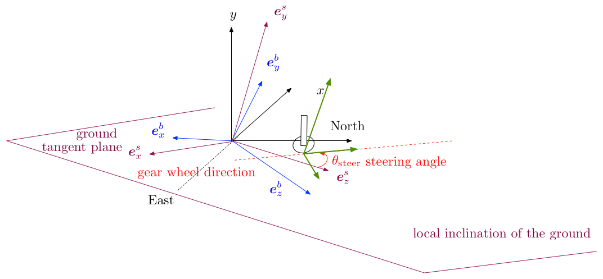 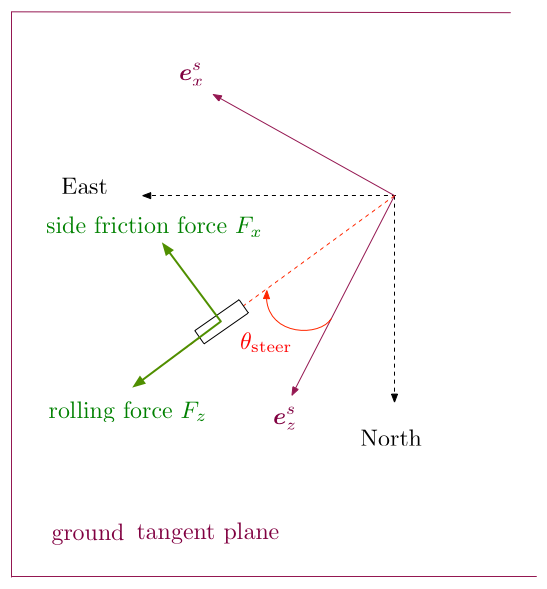
Normal reaction
\[ \boldsymbol{F}_{\textrm{ground reaction}}^b(t) = \mathcal{R}^{\textrm{surf} \rightarrow \textrm{body}}(t)\, \boldsymbol{F}_{\textrm{ground reaction}}^s(t) = \left(\mathcal{R}^{\textrm{surf} \rightarrow \textrm{body}}\right)^{-1}(t)\, \boldsymbol{F}_{\textrm{ground reaction}}^s(t) \]
The strut force is a “penalization” reaction force, proportional to the vertical penetration of the gear in the ground
\[ F_{\textrm{strut}} = K_{\textrm{spring}}\, \underbrace{\textrm{min}\left(\textrm{max}\left(0,\, -y_{\textrm{agl}}\right),\, C_{\textrm{max compression}}\right)}_{\textrm{compression}} - K_{\textrm{damping}}\, v_y \]
This strut force represents the vertical reaction of the ground due to penetration in the aircraft body frame, i.e colinear to aircraft frame vertical direction \(\boldsymbol{e}^b_y\). Using the surface transformation matrix from body to surface frame as expressed above, we get:
\[ \begin{array}{ll} & \displaystyle \underbrace{F_y^b}_{\textrm{estimated strut force}} = r_{inv, 20} F_z^s + r_{inv, 21} F_x^s + r_{inv, 22} F_y^s\\\\ \Rightarrow & \displaystyle F_y^s = \frac{1}{r_{inv, 22}} \left(F_{strut} - r_{inv, 20} F_z^s - r_{inv, 21} F_x^s\right) \end{array} \]
Regarding the integration scheme, as \(F_x^s\) and \(F_z^s\) are not know at \(t^n\), their value at \(t^{n-1}\) is used to evaluate \(F_y^s\)
\[ F_y^{s, n} = \frac{1}{r_{inv, 22}} \left(F_{strut, n} - r_{inv, 20} F_z^{s, n-1} - r_{inv, 21} F_x^{s, n-1}\right) \]
Rolling friction handling
The rolling friction force amplitude is computed as follows:
\[ F_{\textrm{rolling friction}} = \left(C_{\textrm{rolling resistance}} + C_{\textrm{braking resistance}}\right) \times F_y^s \]
Side friction handling
To compute side friction, we must first define several notions:
- Gear velocity
The gear velocity in body coordinates is easily computed from the gear position \(P_{gear}\) provided by user in the reference datum frame and the current computed state of the aircraft:
\[ \boldsymbol{v}^b_{\textrm{wheel}} = \boldsymbol{v}^b_G + \boldsymbol{\omega}^b\wedge \boldsymbol{G P_{\textrm{gear}}}^b \]
- Steering angle
In the plane \(\left(\boldsymbol{e}^s_x, \boldsymbol{e}^s_z\right)\) locally tangent to the earth surface, the steering angle is the angle between the longitudinal axis of the wheel and the longitudinal direction of the aircraft projected on the plane \(\boldsymbol{e}^s_z\) (surface frame has been designed such that surface frame and aircraft body frame have the same yaw/heading).
It is defined accordung to the user joystick/control input:
\[ \theta_{\textrm{steer}} = C_{\textrm{max steering angle}} \times \lambda_{\textrm{steer input}} \times \lambda_{corr}\left(v_{\textrm{wheel}}\right) \]
where \(\lambda_{\textrm{steer input}}\) is the scaling factor linked to current user seering input and \(\lambda_{corr}\) is a correction scaling to avoid over-controlling at faster speeds:
\[ \lambda_{corr} = \lambda_{corr}\left(v_{\textrm{wheel}}\right) = \left\{ \begin{array}{ll} 1 & \textrm{if } v_{\textrm{wheel}} < v_{\textrm{min}}\\ 1 + (\lambda_{corr, max} -1)\,\frac{v_{\textrm{wheel}}-v_{\textrm{min}}}{v_{\textrm{max}}-v_{\textrm{min}}} & \textrm{if } v_{\textrm{min}} < v_{\textrm{wheel}} < v_{\textrm{max}}\\ \lambda_{corr, max}& \textrm{if } v_{\textrm{wheel}} > v_{\textrm{max}}\\ \end{array} \right. \] with \(v_{\textrm{max}} = 50 \,\textrm{fps}\), \(v_{\textrm{min}} = 20 \,\textrm{fps}\), \(\lambda_{corr, max} = 0.25\)
- Slip angle The slip angle is the angle between the wheel longitudinal direction of the wheel and the aircraft velocity direction:
\[ \theta_{\textrm{slip}} = \theta_{\textrm{steer}} - \textrm{atan}\left(\frac{v_x^b}{v_z^b}\right) \]
The side friction force amplitude is computed as follows:
\[ F_{\textrm{side friction}} = C_{\textrm{side friction}} \times \lambda(\theta_{\textrm{slip}})\times F_y^s \]
where \(\lambda = \lambda(\theta_{\textrm{steer}})\) is a table that enables to weighten the friction depending on the slip angle. If the wheel is orthogonal to the longitudinal direction of the plane, friction is maximal and this coefficient is set to 1. On the contrary, if the wheel is perfectly aligned with the plane advancement direction, it is set to 0 and side friction is null.
Several empirical/experimental tables are set in hard in the code to provide friction and braking coefficients \(C_{\textrm{side friction}}\), \(C_{\textrm{rolling resistance}}\) and \(C_{\textrm{braking resistance}}\) depending on: * the type of contact: WHEELS (default), SKIDS, SKIS, SCRAPE POINTS, FLOATS, WATER RUDDER * the type of surface: CONCRETE (default), GRASS, WATER, GRASS_BUMPY, ASPHALT, SHORT_GRASS, LONG_GRASS, HARD_TURF, SNOW, ICE, URBAN, FOREST, DIRT_SURFACE, CORAL_SURFACE, GRAVEL_SURFACE, OIL_TREATED_SURFACE, STEEL_MATS_SURFACE, BITUMINUS, BRICK, MACADAM, PLANKS, SAND, SHALE, TARMAC, WRIGHT_FLYER_TRACK_SURFACE * the surface condition: normal, wet, icy, snow
Microsoft Flight Simulator new flight model
Surface elements definition
First of all, a new surface elements model has been created to better account for the distribution of lift, drag and side forces over the entire aircraft geometry. Compared to XPlane11, our geometrical discretization is more precise. Indeed our model uses 640 surfaces where XPlane11 web site states that « ten elements per side per wing or stabilizer is the maximum ». Our surface elements are spread as follows:
\(40\times 3\) for the fuselage, assimilated to an elongated rectangular box
\(1\times 3\) for the gears, a box
\(1\times 3\) for each external fuel tank, box
\(20\times 3\) vertical tail and rudder
\(20\times 3\) for horizontal tail and elevators
\(80\times 5\) for each wing
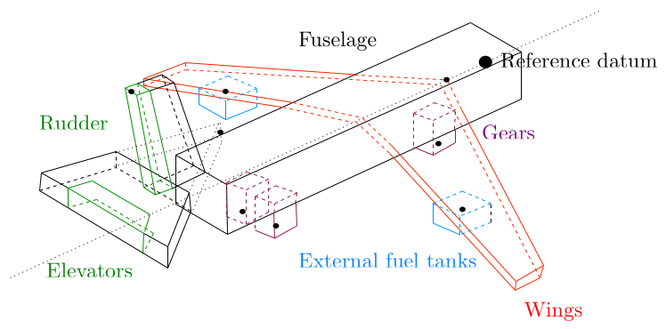
As depicted in the above figure, all geometrical elements of the aircraft are taken into account whereas in XPlane11, only the wings, vertical stabilizer, horizontal stabilizer, and propellers are discretized. This means, for instance, that additional drag and pitch due to gears for instance cannot be accounted for in their model.
Normalization algorithm
This algorithm is used to compute aerodynamics coefficients of each surface element. Indeed, we do not simulate the fluid movement around the aircraft at the moment so we must find a way to tell how each surface elements contribute to lift, drag, side forces and moments. One guideline we want to follow when attributing local aerodynamics coefficients to each surface is to ensure consistency with the classical aerodynamics theory underlying FSX historical flight model. To this aim, an original normalization algorithm has been developed, that helps redistribute global aerodynamics coefficients and tables as provided by user across all surface elements so that the final forces and moments match the ones computed by FSX. Of course, this does not mean we are finally equivalent to FSX modelling, as forces are now distributed over all the aircraft geometry. It rather means that, when suming up all contributions, and thus losing geometrical distribution information, our more general model reduces to FSX historical model. This makes our model an extension of the historical model, which is in accordance with the objective of retro-compatibility. One great advantage of this is to guarantee a consistant behavior for aircrafts designed with the historical model when used in the new model. This requirement is actually of the utmost importance for our client Microsoft.
The normalization algorithm is performed only once at the beginning of the game session.
The idea is to pre-compute, during this initialization stage, lift, drag, side and moments normalization coefficients for a pre-defined set of controls configurations. More precisely, 20 configurations involving flaps and spoilers deflections have been chosen. For each of these 20 aircraft controls configurations, 6 normalization coefficients are computed and stored. A detailed explanation of how these normalization coefficients are computed is provided further below.
During the game, at each simulation step, this big look-up table linking a given controls state to a set of normalization coefficients will be used to linearly interpolate current normalization coefficients from the current aircrafts controls configuration as input by player. This interpolated set of normalization coefficients is then used to uniformly ponderate the lift and drag forces and the moments computed on each surface element, so that the simulation reaches the same global « zero order » solution as the one we would have computed with FSX historical model.
Now let us explain how these normalization coefficients are computed for each of the 20 chosen aircraft controls configuration during the initialization stage. The algorithm is illustrated in the scheme below.
Let us consider a given controls configuration, with spoilers and flaps deflection angles set to a given value. We first use FSX model to get the following eight values with the given flaps and spoilers deflection angles: - \(C_L(\alpha =0)\) - \(\mathrm{d}C_L = \frac{C_L(\alpha = 0.8\,\alpha_{\textrm{stall}}) - C_L(\alpha = 0)}{ (0.8\,\alpha_{\textrm{stall}})}\) - \(C_m(\alpha =0)\) - \(\mathrm{d}C_m = \frac{C_m(\alpha = 0.8\,\alpha_{\textrm{stall}}) -C_m(\alpha = 0)}{ (0.8\,\alpha_{\textrm{stall}})}\) - Stability derivatives \({C_m}_q\), \({C_n}_r\) et \({C_l}_p\) at \(\alpha = 0\)
We then initialize the algorithm by attributing, to each surface element local lift, drag and moments coefficients, simply by uniformely distributing aerodynamics coefficients and tables provided by user over all surface elements with a basic surface-area-based ponderation. Iterative algorithm: We then iteratively compute the same 8 global coefficients we have retrieved from FSX as explained above, but using the new surface elements model. To do so, the surface elements model is evaluated on 6 different aircraft state: - Zero angle-of-attack (purely frontal relative wind) and aircraft has no rotation speed - 10 degrees angle-of-attack and aircraft has no rotation speed - Purely sided relative wind and aircraft has no rotation speed - Zero angle of attack and aircraft has pure constant pitch velocity of 0.5 FPS - Zero angle of attack and aircraft has pure constant roll velocity of 0.5 FPS - Zero angle of attack and aircraft has pure constant yaw velocity of 0.5 FPS
These 6 states excite all modes of the surface elements models and enable to estimate the 8 global coefficients \(C_L(\alpha =0)\), \(\mathrm{d}C_L\), \(C_D(\alpha =0)\), \(C_m(\alpha =0)\), \(\mathrm{d}C_m\) and stability derivatives.
At the end of each iteration, we correct surface elements local aerodynamics coeffcients: we uniformly multiply surface elements lift, drag, side and moments coefficients by a ratio comparing FSX/New model, to a posteriori reach FSX global target.
This evaluation/correction is performed until no correction is needed, i.e correction ratio stagnates to 1.
At the end of this iterative loop, we have attributed lift/drag/side and moments coefficients to each surface element and we can guarantee that the contributions of all surface elements, when sumed up, lead to the same « zero order » solution as the one previsouly obtained in FSX.
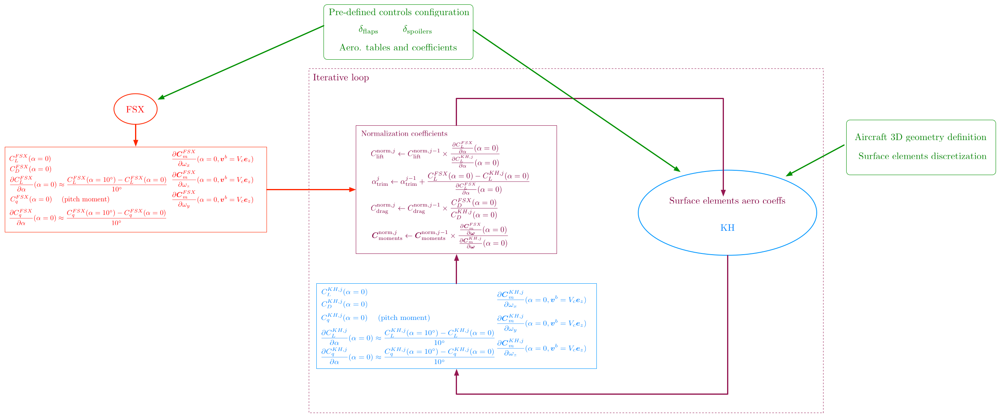
Complex physical phenomena modelization
Stall modelization improvements in relation with surface elements model.
When an aircraft is flying normally, the air moves across the wing in a smooth stream. If the aircraft is pitched upwards sufficiently, the air stream becomes less fluid until it finally “detaches” from the wing. This is called a “stall”. FSX had a stall model, but the stalls weren’t entirely native to the simulation. That is, when the conditions for a stall occurred, some additional code would take over to simulate the stall, as a global phenomenon. While using FSX historical flight model, Asobo people and experimented pilots collaborating with Asobo have noticed poor behaviors for limit cases, typically when approaching stall which has motivated the team to put some additional efforts on physical modelling of « limit » flight configurations, which are notoriously badly represented in the classical aerodynamics theory underlying FSX historical flight model.
The introduction of 3D geometrical information in the flight model through surface elements, as described in the previous paragraph, was clearly a first mandatory step toward improving the physics, as it has enabled the modelization of local phenomena. To better account for stall and all its variants (spin stall, deep stall, simple stall), each surface element has been enriched with a float parameter describing its level of stall. When reaching a certain level of stall, the behavior of the surface is changed using additional parameters so as to follow, broadly speaking, the behavior of a falling plate. Reading the litterature about airfoils behavior in stall configurations, it can indeed be shown that local boundary layer detachment leads to a very sudden change in the aerodynamical behavior of the airfoil, that can be assimilated to a falling plate. The interested reader is refered to this NASA experimentally based study.
This plate model is used in the new flight model to locally change the behavior of surface elements depending on local stall state. This local stall model enables to accurately simulate classical stall but also spin stall, which is intrinsically impossible with FSX non-geometrical flight model. The effect of geometrically twisted wings on stall, which tends to delay stall as the wing root stalls before the wing tip, is also clearly simulated and can even be depicted in-game using debug mode. In the same way, a spin stall is like a normal stall, but it happens to only one wing of the aircraft. When one wing has lift and the other does not, the flying wing will continue to rise until it flips the plane. Without geometrical input in the flight model, historical FSX model could not really account for spin stall, which is now the case with the new flight model.
Surface elements interferences and geometrical self-perturbation modelization
We also believe that our new flight model has some notable and measurable advantages over XPlane11 due to surface interdependency: a surface hit by air will create a change in the airflow that will impact all other surfaces behind the first surface, an effect which is essential for simulating: - Engine wash - Shadowing - Deep stall
Geometrical analysis with respect to the flow direction is performed in the code. This enables to spot which surface elements are shadowed or washed and to temporarily alter their lifting properties accordingly. Future work using the 3D visual model will help improve the computation of occluded/washed surfaces for instance using ray tracing.